Anthony van Dyck, 'William Feilding, 1st Earl of Denbigh', about 1633-4
Anthony van Dyck, 'William Feilding, 1st Earl of Denbigh', about 1633-4
Overview
William Feilding, 1st Earl of Denbigh steps forward, gun in hand. He is shown life-size. We look up at him from below, which emphasises his commanding pose, but the elegance and urbanity usually present in Anthony van Dyck’s formal portraits seems to be missing. This is partly because of the Earl’s relaxed clothing – a mix of contemporary Indian and European fashion – and because the pose is a little contrived and awkward. The Indian servant boy points up at the parrot that the Earl can already see.
Van Dyck must have collaborated closely with his sitters, discussing dress and pose. He painted them as they wished to be seen but also presented their characters as they revealed themselves to him. The Earl had returned from a voyage to India and it is this trip that he must have wished to commemorate.
In-depth
William Feilding, 1st Earl of Denbigh steps forward, gun in hand. He is shown life-size. We look up at him from below, which emphasises his commanding pose, but the elegance and urbanity usually present in Anthony van Dyck’s formal portraits seems to be missing. This is partly because of the Earl’s relaxed clothing – a mix of contemporary Indian and European fashions – and because the pose is a little contrived and awkward. The setting is also more like a stage set than a real place. The Indian servant boy points up at the parrot that the Earl can already see. He points awkwardly across his body rather than directly up at the bird and both of them look puzzled, as if wondering what to do next.
Van Dyck must have collaborated closely with his sitters, agreeing on dress and pose. He painted them as they wished to be seen, but also presented their characters as they revealed themselves to him. The Earl had returned from a voyage to India to visit the early settlements imposed by the East India Company; it is this important trip that he must have wanted to commemorate. Other portraits of him are more formal and conventional.
He wears a silk jacket and pyjamas (these are the light, loose trousers, not the nightwear whose name has subsequently come into English from Urdu). He was one of the few Europeans in India at the time to adopt indigenous dress, but in the portrait he wears it with the ornate collar worn at the court of Charles I. The servant’s costume is not authentic – it appears to have come from a dressing up box kept in van Dyck’s studio containing ‘exotic’ garments to be worn by any Asian or African servant figure in his pictures. The palm tree, too, is unreal, probably taken from the often highly imaginative illustrations brought back from India, and behind the Earl is a very English looking oak. The parrot is likely to be a South American macaw and not an Indian bird. Despite the unreality of this work, the Earl was obviously eager to be seen as an intrepid traveller, not only immersing himself in Indian culture but, by adopting local dress, almost part of it. Certainly the portrait is unique in its depiction of an Englishman in India in the early seventeenth century, and it probably caused comment among viewers of his time.
The Earl was the brother-in-law of the Duke of Buckingham, favourite of Charles I. As the Duke’s influence increased, the Earl received various offices and dignities, becoming an Admiral in 1625 and later, in the 1630s, ambassador to the court of Shah Safi of Persia. During the Civil War in Britain he served under Prince Rupert at the Battle of Edgehill in 1642. The following year, he was wounded during Rupert’s attack on Birmingham and died from the effects.
- NG number
- NG5633
- Date made
- About 1633-4
- Medium
- Oil on canvas
- Dimensions
- 247.5 × 148.5 cm

Thomas Gainsborough, 'Cornard Wood, near Sudbury, Suffolk', 1748
Thomas Gainsborough, 'Cornard Wood, near Sudbury, Suffolk', 1748
Overview
Cornard Wood is on the outskirts of the village of Great Cornard, two miles from Sudbury, where Gainsborough was born. The view is taken from Abbas Hall, looking towards the village of Great Henny. The church of St Mary’s Great Henny appears in the background, our eyes led to it by the path winding through the wood.
Cornard Wood was common land, and villagers had ancient rights to gather wood, graze animals, dig marl for manure and sand for building materials, take the path to Great Henny, or just to stroll there. In Gainsborough’s painting we see many of these activities.
Gainsborough wrote that Cornard Wood was ‘actually painted at Sudbury, in the year 1748’, while he was still learning his craft. The picture belonged for some years to the uncle of the painter John Constable, who was born within ten miles of Gainsborough’s birthplace and was an admirer of his landscapes.
In-depth
Cornard Wood is on the outskirts of the village of Great Cornard, two miles from Sudbury, where Gainsborough was born. The view is taken from Abbas Hall, on a hillside above Great Cornard, looking south and slightly west to the village of Great Henny. The church of St Mary’s Great Henny appears in the background, our eyes led to it by the path winding through the wood. In reality, Great Henny is further away than it appears in Gainsborough’s painting, and its tower is slightly different.
The wood was common land, not private property, and villagers had ancient rights to gather wood, graze donkeys and horses, dig marl for manure and sand for building materials, take the path to Great Henny, or just go for a stroll there. In Gainsborough’s painting we see many of these activities: two donkeys stand on a hillock; a man, accompanied by a seated lady, rests from digging; another man cuts and ties firewood while travellers journey on foot and horseback towards Great Henny. The trees and common on the left are dappled with sunshine, whereas the two spring-fed ponds on the right are bathed in shade. The Prussian blue pigment in the sky has faded to grey.
Gainsborough began teaching himself to draw and paint by studying and copying landscapes by Dutch artists, particularly Wynants and Ruisdael. Dutch landscapes appealed to those who preferred pictures of recognisable reality rather than the ideal classical landscapes of artists such as Claude and Poussin. Gainsborough could have seen Dutch paintings in East Anglian collections and probably knew others through engravings. The countryside of East Anglia, with its river meadows, ponds and windmills, shares much in common with that of the Netherlands. Gainsborough may have recognised that he could paint and sell pictures of his native landscape to those who appreciated Dutch art. However, Cornard Wood has a dreamy quality that sets it apart from the very realistic ‘little Dutch landscapes’ Gainsborough studied in his youth.
In a letter dated 11 March 1788, Gainsborough wrote that Cornard Wood was ‘actually painted at Sudbury, in the year 1748’, while he was still learning his craft, and that its sale enabled his father to send him to London. He said that the painting’s ’schoolboy stile‘ secretly pleased him because it showed the strength of his lifelong commitment to landscape painting. He confessed that ’though there is very little idea of composition in the picture, the touch and closeness to nature [...] are equal to any of my later productions.‘ Gainsborough revealed that in the intervening 40 years, Cornard Wood had passed through the hands of 20 picture dealers and he had even bought the painting back once himself for 19 guineas.
Cornard Wood belonged for some years to the painter John Constable’s uncle, David Pike Watts. Constable was born within ten miles of Gainsborough’s birthplace, and was an admirer of his landscapes. It may have been Constable who recognised the scene as near Cornard and came up with the picture’s title. When Constable was painting near Woodbridge in Suffolk in 1800, he wrote: ’tis a most delightful country for a landscape painter, I fancy I see Gainsborough in every hedge and hollow tree.'
- NG number
- NG925
- Date made
- 1748
- Medium
- Oil on canvas
- Dimensions
- 122 × 155 cm
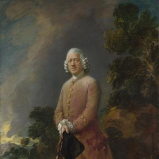
Thomas Gainsborough, 'Dr Ralph Schomberg', about 1770
Thomas Gainsborough, 'Dr Ralph Schomberg', about 1770
Overview
In 1759 Gainsborough moved to the fashionable spa town of Bath, where he established a very successful portrait-painting practice and remained for 15 years. He painted this portrait of Dr Ralph Schomberg, aged about 56, in Bath around 1770.
Gainsborough consulted various doctors during his years in Bath, both for his own medical problems and about the recurring mental instability of his elder daughter, Mary. This portrait may have been painted in place of medical fees.
Dr Schomberg stands at a slight angle to us. His pose is upright and subtly deferential, and his expression conveys benevolent concern. The romantically wild yet artificial landscape, with a wooded hillside under a darkening sky, is painted with enormous speed and sureness, using bold unblended brushstrokes so fluid that dark paint has run down the canvas at the bottom left. The red of Schomberg’s frock coat has faded unevenly in the light.
In-depth
In 1759 Gainsborough moved to the fashionable spa town of Bath, where he established a very successful portrait-painting practice and remained for 15 years. This portrait of Dr Ralph Schomberg, aged about 56, was painted in Bath in about 1770.
The portrait is similar to other robust, outdoor male full-lengths which Gainsborough was painting at the time. Schomberg stands at a slight angle to us. His attitude is upright and subtly deferential, and he seems less at ease in the countryside than Gainsborough’s aristocratic sitters such as John Plampin. He holds his cane in front of him in a grave and thoughtful manner appropriate for a physician. The head of the cane would have been stuffed with pungent herbs which would have been held under the nose to ward off foul smells and disease. He wears a fashionable rolled and powdered wig and an expression of benevolent concern.
The romantically wild yet artificial landscape background, with a wooded hillside under a darkening sky, is echoed by Gainsborough in other full-length portraits of this period. It is painted with enormous speed and sureness, in bold unblended brushstrokes so fluid that dark paint has run down the canvas at the bottom left. Gainsborough’s daughter Margaret observed that he painted with colours that were ‘very liquid’. The crimson pigment in Dr Schomberg’s coat has faded unevenly – in places bleached by sunlight – leaving it a brown-beige colour with some patchy areas of deep red and pink. The extreme fading on Schomberg’s shoulders now looks as though a dusting of powder has fallen from his wig.
Gainsborough consulted various doctors during his years in Bath, both for his own medical problems and about the recurring mental instability of his elder daughter Mary. He was reluctant to accept a previous diagnosis that Mary’s illness was ‘a family complaint’ (possibly a veiled diagnosis of congenital syphilis) and that it was probably incurable. Gainsborough called in Dr Schomberg and Dr Charleton and was relieved when they diagnosed a ‘delirious fever’ and ’soon cured her.‘ However, Mary struggled with mental illness for the rest of her life.
Gainsborough painted four physicians known to have treated himself and his family in Bath. This portrait may have been painted for Dr Schomberg in place of medical fees. At that time, Gainsborough’s portrait charges almost certainly far exceeded his doctors’ fees, but he may have found more rewarding material for portraiture in the attentive expressions of his doctors than in the faces of most of his fashionable Bath sitters.
Ralph Schomberg was the eldest son of the German Jewish doctor Meyer Löw Schomberg, who was one of the most successful physicians in London. Ralph was the black sheep of the family and frequently in debt. In 1777 he was caught stealing money intended for Bath Hospital from the church’s collection plate. He left Bath in shame and settled in Reading, where he died on 29 June 1792.
- NG number
- NG684
- Date made
- About 1770
- Medium
- Oil on canvas
- Dimensions
- 233 × 153.5 cm

Thomas Gainsborough, 'John Plampin', probably about 1752
Thomas Gainsborough, 'John Plampin', probably about 1752
Overview
John Plampin is portrayed here aged about 25. The portrait was probably painted around five years before he inherited Chadacre Hall and the manor of Shimpling, Suffolk, in 1757. Gainsborough shows Plampin on Plampin land. The church tower in the background, though brushed in with only a few touches of near-transparent grey paint, is recognisable as All Saints, Lawshall, about two miles from Chadacre Hall.
Plampin is seated on the ground, his hand tucked fashionably into his waistcoat, at ease in the land he owns. His legs are splayed in an unusual fashion, which is echoed by the limbs, or branches of the tree, creating a composition with radiating spokes like a wheel. The landscape is included in the portrait to reinforce Plampin’s authority and privilege as a member of the British landed gentry, which is presented as part of the ‘natural’ order.
In-depth
John Plampin is portrayed here aged about 25. He was born in Shimpling, near Bury St Edmunds in Suffolk, the eldest son of John Plampin and his wife Ann. The portrait was probably painted about five years before John inherited the manor of Shimpling and Chadacre Hall from his father in 1757.
Gainsborough shows Plampin on Plampin land. The church tower in the background, though brushed in with only a few touches of near-transparent grey paint, is recognisable as All Saints, Lawshall, about two miles from Chadacre Hall.
Plampin went to Jesus College, Cambridge, in 1746 but appears to have left without taking a degree. After succeeding to the Chadacre estate he cultivated his lands and lived the life of a country gentleman. He married Elizabeth Frances Hervey-Aston, granddaughter of the 1st Earl of Bristol, whose home, Ickworth, was the nearest great house to Chadacre.
He is fashionably dressed in a deep blue frock-coat trimmed with gold braid, a white satin waistcoat with gold-tasselled frogging, black breeches and a tricorn hat with a sharp front pinch, as worn by those with military and sporting interests. His square-buckled flat black leather shoes are suitable for a country walk. Plampin is accompanied by a small gun-dog, probably a pointer cross. Gainsborough reused the dog’s pose in other Suffolk portraits of the 1750s.
Plampin’s hand is tucked into his waistcoat, following the rules in a contemporary book of deportment that set out how an elegant man should carry himself. He is seated on a bank with his legs splayed, which is an unusually relaxed position for a portrait, and gives the sense that this confident young man sits as he pleases. The limbs, or branches, of the tree mirror the position of Plampin’s legs, creating a composition with radiating spokes like a wheel. Plampin is portrayed at ease in the land that he owns. Indeed he is so at ease in nature that he is actually sitting on the ground. Nature is used in the portrait to reinforce Plampin’s authority and privilege as a member of the British landed gentry, which is presented as part of the ‘natural’ order.
Plampin’s pose may derive from the French painter Watteau’s portrait of Antoine de la Rocque, of about 1719, which depicts a war veteran sitting under a tree with his wounded leg stretched out before him. Artists in England could have known de la Rocque’s pose through a widely circulated engraving of about 1734. Hogarth adapted the pose for the drunken rake with his leg up on the table in his series of engravings The Rake’s Progress, and Gainsborough’s friend and teacher, Francis Hayman, used it for several paintings including his double portrait of David Garrick and William Windham (National Portrait Gallery, London), of about 1745. An earlier example of the pose, which may have been in Gainsborough’s mind, is the piping shepherd in Rubens’s Pastoral Landscape with a Rainbow (State Hermitage Museum, St Petersburg). Rubens’s shepherd, like Gainsborough’s fashionably dressed Plampin, is free to enjoy the beauty of nature as he stretches out beneath a spreading tree.
- NG number
- NG5984
- Date made
- Probably about 1752
- Medium
- Oil on canvas
- Dimensions
- 50.2 × 60.3 cm
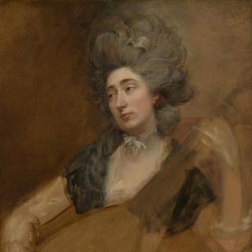
Thomas Gainsborough, 'Margaret Gainsborough holding a Theorbo', about 1777
Thomas Gainsborough, 'Margaret Gainsborough holding a Theorbo', about 1777
Overview
This unfinished portrait of Thomas Gainsborough’s youngest daughter, Margaret (1751–1820), playing a theorbo (a kind of lute) unites two particularly personal aspects of the artist’s life and career: his deep affection for his family and friends, and their shared passion for music.
The Gainsborough family were keen amateur musicians, and this portrait was once thought to be of the artist’s elder daughter Mary, who played the harpsichord, but is now identified as his youngest daughter, Margaret, the more musical member of the family. Margaret never married but spent much of her adult life caring for Mary who suffered from mental illness. Margaret is here shown in her mid-twenties, fashionably dressed and coiffed. She plucks the strings of her instrument while looking out to her right, perhaps making music in harmony with another member of her family. In its vigorous bravura manner, and its intimacy, the portrait demonstrates a forward-looking, almost modern, aspect to Gainsborough’s late portraiture.
In-depth
This portrait of Thomas Gainsborough’s youngest daughter, Margaret (1751–1820), playing a theorbo (a kind of lute) unites two particularly personal aspects of the artist’s life and career: his deep affection for his family and friends, and their shared passion for music.
Gainsborough was, alongside his rival Joshua Reynolds, the leading portrait painter in England in the second half of the eighteenth century. Yet, his private correspondence reveals his preference for painting landscape and rustic scenes, and playing music, over the demands of painting portraits for difficult sitters: in a letter of the 1760s he famously wrote: ‘I’m sick of Portraits and wish very much to take my Viol da Gamba and walk off to some sweet Village where I can paint Landskips [landscapes]’.
This irritation with society portraiture did not, however, extend to portraits of those close to him, in particular likenesses of his wife, Margaret, and his daughters. His eldest daughter Mary, who is shown in a group portrait with her parents in the National Gallery Collection, died in infancy in 1748. His second daughter, also named Mary, and youngest, Margaret, shown here, are captured by his paintbrush in charming and spontaneous immediacy as children chasing a butterfly and holding a cat in two unfinished pictures in the collection (NG1811 and NG3812). The girls were brought up in Suffolk until the family moved to Bath in 1759, and then to London, where their father’s career flourished. As well as fatherly affection shining through in his portraits, surviving letters confirm that Gainsborough doted on his children, writing frequently when they were apart.
Gainsborough ensured his daughters were well-educated, and they were taught painting and drawing, as well as music. The family became keen amateur musicians, although Gainsborough was adamant that his daughters were not to become public performers. This portrait was once thought to be of Mary, who played the harpsichord, but is now identified as Margaret, the more musical member of the family. Margaret never married but spent much of her adult life caring for Mary who suffered from mental illness. Margaret is shown here in her mid-twenties, fashionably dressed with her hair piled high and powdered. Gainsborough made two other portraits of Margaret as an adult, both in the formal manner of society portraits, but this is a much more intimate work which, in its vigorous bravura manner, demonstrates a forward-looking, almost modern, aspect to Gainsborough’s late portraiture. In this portrait, Margaret plucks the strings of her instrument while looking out to her right, perhaps making music in harmony with another member of her family.
As with the two other pictures of Mary and Margaret in the collection, this painting is clearly unfinished, which may indicate that Gainsborough painted these portraits for his own satisfaction, unhindered by the pressure to complete for a patron or sitter. The unfinished state gives an insight into the artist’s working process; sketching the outlines in thick bold black paint on a primed canvas of a reddish-brown colour, a favoured technique of the artist which was inspired by the practice of Van Dyck or Rubens.
- NG number
- NG6687
- Date made
- About 1777
- Medium
- Oil on canvas
- Dimensions
- 90.2 × 69.9 cm
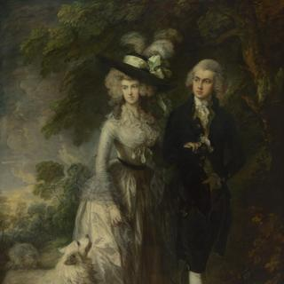
Thomas Gainsborough, 'Mr and Mrs William Hallett ('The Morning Walk')', 1785
Thomas Gainsborough, 'Mr and Mrs William Hallett ('The Morning Walk')', 1785
Overview
Gainsborough painted this portrait of William Hallett (1764–1842) and Elizabeth Stephen (1764–1833) shortly before their marriage on 30 July 1785. The couple are shown arm in arm on a morning walk with a Pomeranian sheepdog. The style of the portrait draws on the work of earlier painters Watteau and Van Dyck, and has a delicate poetic quality largely achieved through Gainsborough’s light, feathery brushwork, which is typical of his late style.
Bride and groom were both 21 when they married, and may be wearing their wedding clothes. Some have seen the portrait as a universal statement about wedded bliss and Hallett’s will records that he lived with Elizabeth ‘most happily for nearly 48 years’. However, Elizabeth’s life can't have been easy as betting and gambling were to be her husband’s downfall. They had two sons and four daughters, and when they died Elizabeth and William Hallett were buried in the church where they had been married.
In-depth
Gainsborough painted this portrait of William Hallett (1764–1842) and Elizabeth Stephen (1764–1833) shortly before their marriage on 30 July 1785. The couple are shown arm in arm on a morning walk with a Pomeranian sheepdog. Gainsborough has suggested the dog’s thick soft coat with sparse, light brushstrokes which he also uses for Mrs Hallet’s dress.
The style of the portrait draws on the work of earlier painters Watteau and Van Dyck, and has a delicate poetic quality, which has been likened to a lingering fragrance. This effect is largely achieved through Gainsborough’s feathery brushwork, which is typical of his late style. The picture is as much a portrait of the romance of young love as it is a likeness of William and Elizabeth Hallett. It was commissioned by the groom who paid Gainsborough £126 for it on 4 March 1786.
The couple may be wearing their wedding clothes. Elizabeth’s gown is of fine ivory silk, caught at the waist with a black silk band. Her breast is covered with a frilled muslin kerchief with a knot of pale grape-green ribbon under it, which is repeated in the extravagant bow on her hat. The three downy ostrich plumes crowning her hat resemble the colour and texture of her powdered hair. The gauzy silk stole draped over her arms echoes the contrived carelessness of her hairstyle and dress. Gainsborough’s slanting brushstrokes in the sky and foliage give the impression of movement, as though there is a light breeze. William Hallett wears a black silk velvet frock-suit, his hair is powdered and he carries a round black hat.
William Hallett was brought up by his grandfather William Hallett I, who had made a fortune as a fashionable cabinet maker and died in 1781. While a teenager, William inherited his grandfather’s villa and estate at Canons in Middlesex. After travelling through Europe for two years on the Grand Tour, William recorded, ‘I returned home, and was married on 30th day of July 1785 to Miss Elizabeth Stephen with a fortune of nearly £20,000’. The wedding took place at the richly decorated church of St Lawrence, Little Stanmore. Bride and groom were both 21. Elizabeth’s background is a little uncertain but she seems to have been the daughter of Elizabeth and James Stephen, a wealthy surgeon who had died before his daughter’s marriage. She is described as resident at Breakspears, an ancient house not far from Canons, then owned by the Partridge family. John Partridge witnessed the couple’s marriage – he may have been a friend or relative with whom Elizabeth was staying.
Some have seen the portrait as a universal statement about wedded bliss. However, William Hallett may have been more preoccupied with speculation about which horse was likely to win the next race. Betting and gambling were to be his downfall. We learn from his will, which he wrote in an informal autobiographical style shortly before his death, that horse racing was his chief interest even before his marriage. Living in the country bored him and he and his wife never lived at Canons. Hallett had let the estate to a racehorse owner and breeder in 1783, two years before he married, and sold it in 1786. It is not clear where the Halletts lived immediately after their wedding. In 1788, Hallett purchased the estate of Little Wittenham, near Wallingford, Berkshire, where he built a ’small house‘. Soon after that they moved to Faringdon House in Oxfordshire, where they lived for 20 years.
In 1807 Hallett made two disastrous property deals and by 1830 there was nothing left of his fortune. His will records that he lived with his wife Elizabeth ’most happily for nearly 48 years, as it was impossible to do otherwise with such a woman‘. We know nothing of the life Elizabeth led after she was painted by Gainsborough sauntering in her filmy dress though a glade aged 21, but it can’t have been an easy one. She had two sons and four daughters and when she died aged 69 she was buried in the Hallett family vault in the same church where she had been married.
William Hallett remarried the following year and sent Gainsborough’s portrait of himself and his first wife to Foster’s sale room, where it did not sell. He wrote his will in the same year and in it lamented the fact that he had no riches to bestow on his children, but added that they ‘will enjoy all my late wife’s fortune’ (which had presumably been tied up in trust funds). He was in debt and had little left to leave. He bequeathed ‘my picture of my late wife... painted before I married July 30th 1785’ – presumably Gainsborough’s double portrait – to his daughter, Lettice Elizabeth. He left another painting and a few religious and law books to his other children and their spouses, money for a ring to his friend and the ‘rest and residue’ to his second wife Mary Jane, ‘hoping sincerely that it may turn out better than expected’. His funeral plans were very modest: ‘I should like to be taken in a concealed manner (for the sake of cheapness) to the Crane Inn at Edgware and from thence by ten poor labourers such as the clergymen of the Parish of Little Stanmore may name... to be buried in my family vault near my late wife’, adding, ‘where my present wife may like to join the party if not better engaged.’
When the portrait was shown at the British Institution’s Gainsborough exhibition in 1859, the reviewer for The Times commented that ‘it would be difficult to conceive a more perfect realisation of youthful elegance and high breeding’, then adding, ‘before the world had withered the young wife’s roses, before the turf and the bottle had soured the husband’s brow, and reddened his nose, or the gout stiffened and swelled those shapely legs of his.’
- NG number
- NG6209
- Date made
- 1785
- Medium
- Oil on canvas
- Dimensions
- 236.2 × 179.1 cm

Thomas Gainsborough, 'Mrs Siddons', 1785
Thomas Gainsborough, 'Mrs Siddons', 1785
Overview
Mrs Siddons (1755–1831) was the greatest tragic actress of her time, remaining at the top of her profession for 30 years. Gainsborough painted her in the winter of 1784–5, during her third London season.
Most of Mrs Siddons’s earlier portraits depict her in character, but Gainsborough portrayed her off-stage and in fashionable contemporary dress. She wears a black beaver hat trimmed with ribbon and ostrich feathers, and a blue striped ‘wrapping-gown’, yellow mantle and fox-fur muff. Gainsborough apparently found some difficulty in capturing Mrs Siddons’s distinctive features, and is said to have exclaimed: ‘Confound the nose, there’s no end to it!’
At the time Gainsborough painted her, Mrs Siddons was playing the greatest of all her roles – Lady Macbeth. Something of the power and passion of that part can be felt in the portrait, considered by some as the artist’s masterpiece.
In-depth
Mrs Siddons (1755–1831) was the greatest tragic actress of her time, remaining at the top of her profession for 30 years. The writer and critic William Hazlitt wrote that ‘She was Tragedy, personified...To have seen Mrs Siddons was an event in everybody’s life’. Gainsborough painted her in the winter of 1784–5, during her third London season.
As Sarah Kemble, she was born into a theatrical family. Four of her brothers became actors, the most famous of whom was John Philip Kemble. Aged 18, she married the actor William Siddons in 1773 and was thereafter known professionally as Mrs Siddons. Although she had acted in provincial theatres since childhood, Mrs Siddons’s first London appearance, at Drury Lane in 1775, was not a success. However, when she returned again in the winter season of 1782–3, she created a sensation, causing the theatre management to put up her salary from £5 to £20 for the next season and resulting in a ‘long and unbroken line of carriages’ rolling towards Drury Lane.
Most of Mrs Siddons’s earlier portraits depict her in character; one of the most celebrated is Reynolds’s portrait Mrs Siddons as the Tragic Muse signed and dated 1784 (now in the Huntington Art Gallery, San Marino) and exhibited that year at the Royal Academy.
Mrs Siddons was forever ‘on the wing’ between the theatre and her young family, for whom she was the only effective breadwinner, and she had less and less time to sit for all the painters wishing to portray her. Gainsborough probably began his portrait of her early in 1785, shortly before her thirtieth birthday. Like Reynolds’s Mrs Siddons as the Tragic Muse, Gainsborough’s portrait was painted in the hope of finding a buyer or engraver, rather than commissioned. He made a particularly careful chalk drawing of Mrs Siddons (Cleveland Museum of Art, Ohio), suggesting that he couldn‘t count on more than one sitting for the portrait. In April 1785 Gainsborough exhibited the finished portrait in his London studio.
Mrs Siddons is shown off-stage and in fashionable contemporary dress. She wears a black beaver hat trimmed with ribbon and ostrich feathers, like those worn by other ladies Gainsborough portrayed around 1785, such as Mrs William Hallett. Mrs Siddons’s blue striped gown, tied at the waist with a blue sash, is known as a ’wrapping-gown‘ and would have been comparatively easy for a busy actress to slip on and off. Her yellow mantle is edged with fox fur and she holds a fox fur muff. The sombre red curtain dramatically framing Mrs Siddons’s head, similar to those in portraits by Rubens and Van Dyck, is not often found in portraits by Gainsborough. He apparently found some difficulty in capturing Mrs Siddons’s distinctive features, and is said to have exclaimed: ’Confound the nose, there’s no end to it!'
Mrs Siddons was known for her grand manner – she was said to look, walk and move like a woman of superior rank. At the time Gainsborough painted her, she was playing her greatest role – Lady Macbeth. Something of the power and passion of that part can be felt in the portrait, considered by some as the artist’s masterpiece.
- NG number
- NG683
- Date made
- 1785
- Medium
- Oil on canvas
- Dimensions
- 126 × 99.5 cm
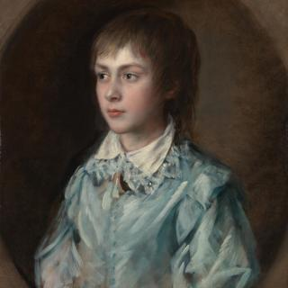
Thomas Gainsborough, 'Portrait of Edward Richard Gardiner', about 1760-8
Thomas Gainsborough, 'Portrait of Edward Richard Gardiner', about 1760-8
Overview
Edward Gardiner was Gainsborough’s nephew, and recorded to have spent time in his studio. He is depicted in this portrait at the age of around eight or nine. It is thought that the painting was created as a pendant to a portrait of the sitter’s sister Susan, at the same age.
The portrait of Edward reflects the influence of the Flemish portraitist Anthony van Dyck (1599-1641) in the loose brushwork and the style of finish. The child appears to be wearing the same pale blue costume as the sitter in Gainsborough’s painting The Blue Boy (Huntington Collection, California), suggesting that this may have been a prop in the artist’s studio. This use of historic costume also makes reference to the work of Van Dyck whose work Gainsborough admired. Gainsborough’s emulation of great artists in his later work reflects growing confidence in his own abilities.
In-depth
Edward Gardiner was Gainsborough’s nephew, and recorded to have spent time in his studio. He is depicted in this portrait at the age of around eight or nine. It is thought that the painting was created as a pendant to a portrait of the sitter’s sister Susan, at the same age.
The portrait of Edward reflects the influence of the Flemish portraitist Anthony van Dyck (1599-1641) in the loose brushwork and the style of finish. The child appears to be wearing the same pale blue costume as the sitter in Gainsborough’s painting The Blue Boy (Huntington Collection, California), suggesting that this may have been a prop in the artist’s studio. This use of historic costume also makes reference to the work of Van Dyck whose work Gainsborough admired. Gainsborough’s emulation of great artists in his later work reflects growing confidence in his own abilities.
- NG number
- L1351
- Date made
- About 1760-8
- Medium
- Oil on canvas
- Dimensions
- 62.2 × 50.2 cm

Thomas Gainsborough, 'Portrait of the Artist with his Wife and Daughter', about 1748
Thomas Gainsborough, 'Portrait of the Artist with his Wife and Daughter', about 1748
Overview
This is the earliest known self portrait in oil by Gainsborough, and the only known one of him with his family. He sits with his wife, Margaret, and the little rosy-cheeked girl is probably Mary, their short-lived first daughter. It is likely Gainsborough began it before Mary’s burial on 1 March 1748, when he was not yet 21, and his wife Margaret was a year or so younger.
Gainsborough portrays himself in a relaxed cross-legged pose, with one button of his waistcoat undone to suggest his elegant lack of concern with his appearance. He holds a piece of paper which may once have represented a drawing. The paint here and on the child has become transparent with age. Living in London at the time, Gainsborough had some evident difficulties with the landscape as well as with the proportions of the rather stiff-limbed figures. Quite a few changes were made during painting, particularly to Margaret’s pose and dress, and her left hand remains unfinished.
In-depth
This is the earliest known self portrait in oil by Gainsborough, and the only known one of him with his family. The little rosy-cheeked girl holding a posy of flowers is probably Mary, Gainsborough’s first daughter. If this is so, the picture was probably painted in 1748, the year she died, when the family was living in Hatton Garden in London. It is likely Gainsborough began it before Mary’s burial on 1 March 1748, when he was not yet 21, and his wife Margaret was a year or so younger. Gainsborough and Margaret returned to Sudbury in Suffolk at the end of 1748 or early 1749.
Gainsborough portrays himself in a relaxed cross-legged pose, which is an adaptation of one used often by the portrait painter Francis Hayman (1708–1776), who probably taught Gainsborough at the St Martin’s Lane Academy in London. Gainsborough painted the landscape backgrounds in some of Hayman’s pictures in the later 1740s. The vague landscape in the background here is very different from the detailed Suffolk farmland seen in Gainsborough’s portrait of Mr and Mrs Andrews, probably painted two years later, and it appears unfinished. Gainsborough shows one button of his waistcoat undone to suggest his elegant lack of concern with his appearance. The outer seam of his breeches was originally trimmed with yellow or gold braid. He holds a thinly painted piece of paper, which may have been intended to represent a drawing. The paint here and on the little girl has become transparent with age.
The whale-boned sides of Mrs Gainsborough’s dress ride up as she perches on the bank. The gown has holes over the hips through which she could slot her hands to manoeuvre her wide skirts, and her muslin apron is tacked inexpertly on to her bodice. Gainsborough reused his wife’s pose and dress for Mrs Gravenor in Mr and Mrs John Gravenor and their Daughters (Yale Center for British Art, New Haven) and for other sitters.
Gainsborough never resolved some parts of the composition, such as his wife’s left hand, and they remain unfinished. Quite a few changes were made during painting, particularly to Mrs Gainsborough’s pose and dress – she was originally wearing a floppy hat which covered part of her forehead. Gainsborough began to paint a smaller, more close-fitting hat that was never completed.
Gainsborough’s wife, Margaret Burr, was the illegitimate daughter of Henry Somerset, 3rd Duke of Beaufort. The Duke settled an annuity of £200 on Margaret from the date of her marriage (15 July 1746) until her death, which greatly helped the family at the start of Gainsborough’s career. A sense of the value of the annuity can be gained by comparing it to Gainsborough’s professional earnings. In 1758, he charged 15 guineas for a half-length portrait and in 1760 he charged 60 guineas for a full-length, rising to 160 guineas in 1787, the last year of his life. Gainsborough’s letters leave little doubt that he loved his wife and that he felt very lucky to have married her.
- NG number
- NG6547
- Date made
- About 1748
- Medium
- Oil on canvas
- Dimensions
- 92.1 × 70.5 cm

Thomas Gainsborough, 'Portrait of the Artist's Daughter Mary', 1777
Thomas Gainsborough, 'Portrait of the Artist's Daughter Mary', 1777
Overview
This portrait of Gainsborough’s older daughter Mary was produced in 1777 around the same time as a portrait made of his youngest, Margaret Gainsborough, holding a Theorbo (NG6687), which entered the National Gallery Collection in 2019. Unusually, the artist has inscribed the work with the name of the sitter and signed it, indicating the work is complete. These paintings of the two sisters were kept by the artist’s descendants throughout the nineteenth century, reflecting their importance to the family.
Both portraits are notably unfinished, though Margaret’s is less finished than this painting of Mary, as are The Artist’s Daughters, chasing a Butterfly (NG1811) and The Artist’s Daughters, playing with a Cat (NG3812), also in the National Gallery Collection. The loose handling and experimentation adopted in all these works reflect the intimate relationship the artist held with each sitter. Together they demonstrate his distinctive approach to representing his family.
This work also reflects Gainsborough’s knowledge of, and desire to emulate, paintings by great artists from previous generations. The painting to which the portrait of Mary alludes, is now known to be a painting by Peter Paul Rubens (1577–1640) of his wife.
In-depth
This portrait of Gainsborough’s older daughter Mary was produced in 1777 around the same time as a portrait made of his youngest, Margaret Gainsborough, holding a Theorbo (NG6687), which entered the National Gallery Collection in 2019. Unusually, the artist has inscribed the work with the name of the sitter and signed it, indicating the work is complete. These paintings of the two sisters were kept by the artist’s descendants throughout the nineteenth century, reflecting their importance to the family.
Both portraits are notably unfinished, though Margaret’s is less finished than this painting of Mary, as are The Artist’s Daughters, chasing a Butterfly (NG1811) and The Artist’s Daughters, playing with a Cat (NG3812), also in the National Gallery Collection. The loose handling and experimentation adopted in all these works reflect the intimate relationship the artist held with each sitter. Together they demonstrate his distinctive approach to representing his family.
This work also reflects Gainsborough’s knowledge of, and desire to emulate, paintings by great artists from previous generations. The painting to which the portrait of Mary alludes, is now known to be a painting by Peter Paul Rubens (1577–1640) of his wife.
- NG number
- L1352
- Date made
- 1777
- Medium
- Oil on canvas
- Dimensions
- 77.5 × 64.8 cm

Thomas Gainsborough, 'The Market Cart', 1786
Thomas Gainsborough, 'The Market Cart', 1786
Overview
A horse-drawn cart trundles along a woodland path on the way to market. Two boys and their dog walk alongside its giant wheel, while two girls sit perched on top of the produce. Carrots spill out of a basket, and turnips, potatoes and cabbages are loosely piled in. The older girl raises one arm, perhaps to shade her eyes from the flickering sunlight as they pass beneath the trees, or in response to the woodsman gathering firewood.Two weary travellers rest beside the road with their baskets, bundles and dog.
This is one of Gainsborough’s last landscapes, painted about 18 months before he died. The original position of the horse’s head, which was nearer the cart, can now be seen through the paint.
In-depth
A horse-drawn cart trundles along a woodland path on the way to market. Two small boys and their dog walk alongside its giant wheel, while two girls sit perched on top of the produce. Carrots spill out of a basket, and turnips, potatoes and cabbages are loosely piled in. It is easy to imagine some of the vegetables tumbling out as the cart lurches through the water ahead. The older girl raises one arm, perhaps to shade her eyes from the flickering sunlight as they pass through the woods, or in response to the woodsman gathering fallen branches for firewood. Two weary travellers rest beside the road with their baskets, bundles and dog.
Gainsborough shows accurately how the horse is harnessed to the cart – there are no reins, as this is an old horse who has made the journey to market many times and all he needs to keep him on the path is a tap from the young boy’s fresh-cut stick. The original position of the horse’s head, which was nearer the cart, can now be seen through the paint which has become translucent with age.
The canvas is six feet high and as large as some of Gainsborough’s grand full-length portraits. It was painted at the end of 1786, about 18 months before Gainsborough died. The landscape elements – the position of the trees, and the angle of the gently sloping, uneven track – are based on a very freely painted unfinished oil sketch (private collection) that Gainsborough probably made in the same year. The solitary herdsman in the sketch, following his cows to a watering place, is replaced in the painting with the heavily laden market cart.
Gainsborough frequently drew and painted such ordinary country carts, as seen in his two versions of The Harvest Wagon of 1767 and 1784–5 (Barber Institute of Fine Arts, Birmingham, and Art Gallery of Ontario, Toronto). The horse and cart here are based on a black chalk and grey wash study probably made not much earlier than the painting. Gainsborough painted a slightly larger landscape, Peasant smoking at a Cottage Door (University of California, Los Angeles), in 1787, shortly after The Market Cart, and contemporaries considered that the two paintings went together as ‘companion pictures’.
The Market Cart is neither an accurate representation of rural life in 1786 nor an idealised landscape. If the painting can be said to have a meaning, perhaps it is about transience. We glimpse the market cart as it passes with its glowing carrots, dark-curled cabbages and pearly turnips, which the pretty young girls will have to sell in the market if they are not to be brought back home in a wilted state. Perhaps at the end of his life Gainsborough was fondly recalling days of his Suffolk boyhood, all too quickly passed.
- NG number
- NG80
- Date made
- 1786
- Medium
- Oil on canvas
- Dimensions
- 184 × 153 cm

Thomas Gainsborough, 'The Painter's Daughters chasing a Butterfly', probably about 1756
Thomas Gainsborough, 'The Painter's Daughters chasing a Butterfly', probably about 1756
Overview
The two little girls in this unfinished portrait are Mary and Margaret, Gainsborough’s daughters by his wife, Margaret Burr, and their only children to survive infancy. Mary was baptised on 3 February 1750 and Margaret on 22 August 1751. Mary was given the name of the couple’s first daughter, who died at about 18 months old.
Margaret and Mary run hand-in-hand through dark woodland in pursuit of a cabbage white butterfly, which has landed momentarily on a tall thistle. Margaret reaches out her hand, while Mary clutches her looped-up muslin apron as a net. The children’s attempt to catch the elusive butterfly may be intended to suggest the fleeting nature of childhood, and the fragility of children’s lives. The wood in Gainsborough’s picture is dark and sombre.
This is probably the earliest of at least six double portraits that Gainsborough painted of his daughters between about 1756 and 1770.
In-depth
The two little girls in this unfinished portrait are Mary and Margaret, Gainsborough’s daughters by his wife Margaret Burr, and their only children to survive infancy. Both were born while Gainsborough was living and working in Sudbury in Suffolk, his own birthplace. Mary was baptised on 3 February 1750 and Margaret on 22 August 1751 – they were probably only 18 months apart in age.
Mary and Margaret are running hand-in-hand through a dark landscape in pursuit of a cabbage white butterfly, which has landed momentarily on a tall thistle. Margaret reaches out her hand for the butterfly, while Mary clutches her looped-up muslin apron like a net. The children’s attempt to catch the elusive butterfly may be intended to suggest the fleeting nature of childhood. The wood in Gainsborough’s picture is dark and sombre.
The Painter’s Daughters chasing a Butterfly is likely to have been painted in about 1756 while the family was living in Ipswich. Mary seems to be about six years old, and Margaret about four or five. The garden of the house Gainsborough rented adjoined that of a much larger house, occupied by his friend Revd Robert Hingeston, who was Master of Ipswich School. On 20 October 1759, before leaving Ipswich for Bath, Gainsborough put an advertisement in the local newspaper listing all of his household goods, some pictures and landscape drawings for sale. Unless this painting of his daughters was a gift from Gainsborough, it is likely that Hingeston bought the picture of the two little girls he must often have seen playing in their garden at this sale.
Before this portrait, Gainsborough had probably never tried painting two full-length and almost life-sized figures. His earlier figures portrayed in the open air such as Mr and Mrs Andrews are quite small in scale and somewhat doll like. His daughters by contrast are shown much larger and in bold, entirely natural attitudes. Painting his own children allowed Gainsborough the freedom to experiment with handling paint, which gives this portrait its remarkable spontaneity and freshness. The pinkish-brown ground is left clearly showing through Margaret’s dress, her apron and her outstretched foot, while thick streaks of white suggest the movement of the fabric in the sunlight. The girls' faces are highly finished, but elsewhere Gainsborough’s brushwork is loose and expressive.
Gainsborough is known to have painted six double portraits of his daughters, as well as separate portraits of each of them, between about 1756 and 1770. When Gainsborough painted the girls together he always showed them fondly holding hands, or protecting one another with an arm or half-embrace, as in The Painter’s Daughters with a Cat.
Gainsborough’s fifth double portrait of his daughters as students of drawing (Worcester Art Museum, Massachusetts) reveals his hope they could be trained to draw well enough to earn money, but no work by either daughter is now known. After a brief unhappy marriage in 1780, Mary returned to her parents’ house. In later life she and Margaret, who never married, would live together. By this point Mary was suffering from severe mental illness.
- NG number
- NG1811
- Date made
- Probably about 1756
- Medium
- Oil on canvas
- Dimensions
- 113.5 × 105 cm

Thomas Gainsborough, 'The Painter's Daughters with a Cat', probably about 1760-1
Thomas Gainsborough, 'The Painter's Daughters with a Cat', probably about 1760-1
Overview
This portrait of Gainsborough’s daughters is likely to have been painted in Bath a year or so after the family moved there in late 1759. Mary appears to be about ten or eleven years old, and Margaret about eight or nine. Margaret leans her forehead back against her sister’s cheek as she holds their barely sketched-in cat, while Mary wraps her arms around her little sister, partly to help her with the writhing cat – whose tail she appears to pull – but also in a moving gesture of tenderness. No other portrait of this date conveys so strongly the sense that it is painted from life.
Although the faces have been painted, most of the picture is unfinished. The feathery pattern of gold, blue and grey brushstrokes that surrounds the girls seems to suggest storm clouds, sun and woodland.
In-depth
Gainsborough is known to have painted six double portraits of his daughters Mary and Margaret, as well as separate portraits of each of them, between about 1756 and 1770. The Painters Daughter’s chasing a Butterfly is probably the earliest of these double portraits. The Painter’s Daughters with a Cat is likely to have been painted in Bath a year or so after the family moved there in late 1759.
Here, Mary appears to be about ten or eleven years old, and Margaret about eight or nine. Margaret leans her head back against her sister’s shoulder as she cradles their cat in her arms. The sketched cat has been partly painted out with a different yellow than the one Gainsborough used for Mary’s dress. This may have been to make it less distracting when it became clear the painting would never be finished. Mary rests her cheek against Margaret’s forehead, her arms wrapped around her sister, partly to help her with the writhing cat – whose tail she appears to pull – but also, it seems, with love and protection for her little sister. Their father captures this moving gesture of tenderness.
After priming his canvas, Gainsborough drew the subject in white chalk or pastel, working swiftly and directly on the pinkish-brown ground. The cat held in Margaret’s clasped hands is very lightly sketched in dark brushstrokes. Expressive, fluid touches of paint build up the forms with colour, light and dark rather than with line. Although the faces have been painted, most of the picture is left unfinished. The feathery pattern of gold, blue and grey brushstrokes that surrounds the girls seems to suggest storm clouds, sun and woodland, creating a decorative backdrop that feels emotionally charged, atmospheric and timeless.
Gainsborough paints his daughters in attitudes that are natural to them and familiar to him. No other portrait of this date conveys so strongly the sense that it is painted from life. The result is very different from Gainsborough’s commissioned portraits of children whom he did not know so well. In those paintings he expresses children’s youthful charm, social confidence and financial security. In The Painter’s Daughters with a Cat, Gainsborough observes his own daughters with a moving insight that comes from knowing them intimately and understanding their vulnerability.
A lithograph of the picture was published by Richard Lane in about 1827 after Mary’s death. It reverses the image and emphasises the children’s vulnerability with the invented title The Orphans. The cat has been omitted and the sketchy details completed in such a way that much of the moving naturalism of Gainsborough’s original painting has been lost.
- NG number
- NG3812
- Date made
- Probably about 1760-1
- Medium
- Oil on canvas
- Dimensions
- 75.6 × 62.9 cm

Thomas Gainsborough, 'The Pitminster Boy', 1768-9
Thomas Gainsborough, 'The Pitminster Boy', 1768-9
Overview
This portrait is a sensitive representation of the studio assistant who would ‘carry the artist’s materials when he went into the country to sketch’. His name is not recorded, but this painting has been named after the child’s home village in Somerset. The loose handling of the paint and unfinished nature suggest it was executed quite quickly and reflects the intimate relationship the Gainsborough had with the subject, as a member of his household. The artist was experimenting freely with pose and expression. The painting follows the Dutch tradition of the tronie, in which a figure is painted to explore character, rather than as the portrait of an individual. This places the emphasis on capturing the expression on the young boy’s face.
In-depth
(No in-depth found)
- NG number
- L1354
- Date made
- 1768-9
- Medium
- Oil on canvas
- Dimensions
- 60.8 × 50.4 cm

Thomas Gainsborough, 'The Watering Place', before 1777
Thomas Gainsborough, 'The Watering Place', before 1777
Overview
A group of cattle and goats has been herded to drink in a stream or pool. Two country girls, a child and a man sit quietly on the sandy bank. The sun begins to sink behind the distant hills, casting a golden evening light over the peaceful woody landscape.
Gainsborough’s painting is based on a drawing he made (private collection). It also echoes a painting by Rubens, now known as The Watering Place, which Gainsborough saw in London in 1768. But where Rubens’s work, now also in the National Gallery, is energetic and a morning scene, Gainsborough’s, glimpsed in fading light, is tranquil and contemplative.
This painting was exhibited by Gainsborough at the Royal Academy in 1777 and he also made an etching of the scene (Tate Gallery, London).
In-depth
A herdsman waits on his horse while cattle and goats drink at a woodland pool or stream. The sun is half-sunk behind the distant hills, casting a golden light over the canopies of dense trees and sandy ground. Two country girls with a child and a basket sit beside the water and a man rests behind them. The peacefulness of the group adds to the picture’s sense of tranquillity. One of the girls extends her arm to point to the horizon, perhaps admiring the sunset view, or remarking that it will soon be dark.
Gainsborough based this painting on a chalk drawing that he probably made during the mid-1770s (private collection). In the painting, the trees are denser and more imposing than in the drawing. The winding sandy path in the drawing leads to a pool of water in the painting, fed by a stream trickling over large rocks.
The painting was probably made in London after Gainsborough’s return from Bath in 1774. It was one of six works he sent to the Royal Academy exhibition in 1777, which included two full-length portraits. It was exhibited simply as ‘A large landscape’ and was praised by various visitors and reviewers. The Public Advertiser’s reviewer wrote: ‘’Tis hard to say in which branch of the art Mr Gainsborough excels, landscape or portrait painting.‘
Although contemporaries saw the influence of the great seventeenth-century Flemish master Rubens in Gainsborough’s new richness of colour and energetic brushwork in his work from the late 1760s, there is no evidence that Gainsborough made studies or copies of landscapes by Rubens. However, in 1768 he did see Rubens’s painting now known as ’The Watering Place‘ in the London home of the 3rd Duke and Duchess of Montagu when he painted their portraits. Gainsborough was so impressed by Rubens’s painting that he advised his friend, the actor and playwright David Garrick, to invent an excuse to call upon on the Duke of Montagu ’to see his Grace’s Landskip of Rubens‘.
While Gainsborough’s ’large landscape‘ echoes some elements from the Rubens, it is not directly copied from it. His debt to Rubens’s picture is most evident in the soaring mass of bluish-green trees, and his decision to add a watering place and cattle. Whereas Rubens’s cattle are unruly and energetic beasts, Gainsborough’s are placid and peaceful. Rubens’s picture is a brightly lit morning scene, but Gainsborough’s scene is a tranquil and contemplative dream of rural peace, glimpsed in the fading evening light. When Gainsborough’s painting entered the National Gallery in 1827, it became known as ’The Watering Place', like Rubens’s painting, which was purchased for the Gallery in 1936.
Gainsborough also made a soft-ground etching with aquatint of the scene (Tate Gallery, London), which was not published during his lifetime. The etching differs slightly from the painting – the herdsman, goats, the other man and the child are missing, and the trees are less dense.
- NG number
- NG109
- Date made
- Before 1777
- Medium
- Oil on canvas
- Dimensions
- 147.3 × 180.3 cm
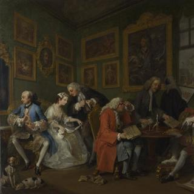
William Hogarth, 'Marriage A-la-Mode: 1, The Marriage Settlement', about 1743
William Hogarth, 'Marriage A-la-Mode: 1, The Marriage Settlement', about 1743
Overview
This is the first in Hogarth’s series of six paintings titled Marriage A-la-Mode. They were painted to be engraved and then sold after the engravings were finished.
The Earl of Squander is negotiating the marriage of his son to the daughter of a rich Alderman of the City of London. The Alderman’s family will acquire an aristocratic title through the marriage; the Earl will get his hands on ready cash, which has already been emptied out from the money bags onto the table.
The Earl’s son and Alderman’s daughter have no interest in each other or the marriage. A foxhound and bitch, chained together round the neck, anticipate the bonds of matrimony that will soon tie them together. The large black spot on the groom’s neck and his fashionable French dress suggest he has picked up syphilis, known as the French disease, on his travels.
In-depth
This is the first in Hogarth’s series of six paintings titled Marriage A-la-Mode which satirise the upper classes. They were painted to be engraved and then sold after the engravings were finished.
The Earl of Squander is receiving guests in the bedroom of his town house; his canopied bed with a coronet on top is in the corner. He is negotiating the marriage of his son to the daughter of a rich Alderman of the City of London. In the centre of the scene is the marriage settlement – a large parchment document in the Alderman’s hands. The Alderman’s family will acquire an aristocratic title through the marriage; the Earl will get his hands on ready cash, which has already been emptied out from the money bags onto the table.
The unfinished house seen through the window – of a preposterous design that breaks all architectural rules – suggests that the Earl’s resources are strained. However, he seems to suggest that money is nothing compared to what he has to offer: he points to his family tree going back to William the Conqueror with one hand while resting the other on his heart, which pumps with noble blood. The Earl’s eagerness to display the coronet that decorates his bed, crutches, footstool and his picture frames suggests that his family is not really of the old aristocracy. He is self-interested and vain and rests his gouty foot on the footstool.
Meanwhile the bride’s father peers through his spectacles at the contract. He is dressed respectably but not fashionably and is clearly ill at ease. He wears his gold chain of office as an Alderman of the City of London and a sword, which sticks out from between his legs in an ungainly fashion. He is presumably well aware of what it will cost him to marry his daughter to the Earl’s son. An inkstand, quill pen, sealing wax and a candle are on the table ready for signing and sealing the settlement.
The Earl’s son, Viscount Squanderfield, and the Alderman’s daughter have no interest in each other or the marriage. The foppish and foolish Viscount regards himself in the mirror and takes a pinch of snuff while his bride shuttles her ring up and down her veil. Her father’s lawyer, Silvertongue, sharpens his quill and whispers in her ear. A foxhound and bitch are at the bride and groom’s feet, chained together round the neck, anticipating the bonds of matrimony that will soon tie the the couple together. Gloomy old master paintings line the walls, while a screaming Medusa hanging over the bride gives vent to the rage she can't express.
The large black spot on the groom’s neck indicates that he is suffering from the venereal disease syphilis. Hogarth based his figure of the Viscount on John Wootton’s illustration to one of Gay’s Fables, The Monkey who had seen the World. The Viscount’s fashionable French dress suggests that he too has travelled, probably around Europe on the Grand Tour. He may have picked up syphilis, known as the French disease, while abroad.
- NG number
- NG113
- Date made
- About 1743
- Medium
- Oil on canvas
- Dimensions
- 69.9 × 90.8 cm

William Hogarth, 'Marriage A-la-Mode: 2, The Tête à Tête', about 1743
William Hogarth, 'Marriage A-la-Mode: 2, The Tête à Tête', about 1743
Overview
This is the second in Hogarth’s series of six paintings titled Marriage A-la-Mode. It is a few months after the wedding of the Earl of Squander’s son to the Alderman’s daughter. The bride stretches sleepily, apparently after spending the whole night playing cards. The groom sprawls in his chair, exhausted from a night of debauchery on the town – the small dog tugs a girl’s muslin cap out of his pocket, and a second muslin cap is wound round the hilt of his broken sword. The large black spot on his neck denotes syphilis.
Two fiddle cases lie on top of one another on an overturned chair, suggesting that the Viscountess has been spending the evening in activities more intimate than simply playing whist. The drawing room is a battleground for the silent dislike between the couple and the disharmony of their possessions. The steward of the household rolls his eyes up to heaven as he exits with a wad of unpaid bills.
In-depth
This is the second scene in Hogarth’s series of six paintings titled Marriage A-la-Mode, which satirise the upper classes. They were painted to be engraved and then sold after the engravings were finished.
It is now a few months after the wedding of the Earl of Squander’s son to the Alderman’s daughter. The phrase ‘tête à tête’ implies an intimate conversation but the newly-weds in their new home (completed with the Alderman’s money) look anything but intimate. At least, not with each other. A wall clock shows the time to be shortly after noon. The bride stretches sleepily, apparently after a whole night playing cards. The groom sprawls in his chair, his hands thrust in his pockets, exhausted from a night of debauchery on the town – the small dog tugs a girl’s muslin cap out of his pocket, and a second muslin cap is wound round the hilt of his sword. The large black spot used by Hogarth to denote syphilis is clearly visible on his neck. The sword is broken, perhaps implying that the Viscount himself is impotent. This image of the Viscount is probably the best-known single figure in all Hogarth’s work. The modelling of the face was particularly praised for the way it expressed both the Viscount’s youth and the physical evidence of his dissipation.
Two fiddle cases lie on top of one another on an overturned chair, suggesting that the Viscountess has been spending the evening in activities more intimate than simply playing whist. She seems to regard her husband with an air of sly triumph. Several details imply she is probably enjoying an affair of her own. A man’s head carved on the mantelpiece beside her suggests that there is a third party in this tête à tête. The painting covered with a curtain in the adjoining room reveals a large bare foot resting on a bed, causing one to think it depicts an activity so indecent that the picture cannot be displayed and also that something clandestine has been going on. The Viscountess may be signalling to someone with her small folding pocket mirror.
The drawing room is a battleground for the silent dislike between the couple and the disharmony of their possessions.The unmistakable message of the whole scene is that the Squanderfields have bad taste – the battered antique bust on the mantelpiece is placed among a collection of fashionable but bogus Chinese figures. The wall clock is of a particularly absurd design, comprising two fish, a cat and a Buddha with a pair of twisted candleholders sticking out of his loins, all emerging from an excess of foliage. A slovenly servant still in his hair curlers stumbles about in the adjoining room and the steward of the household rolls his eyes up to heaven as he exits with a wad of unpaid bills. The single piece of paper on the steward’s spike records the date of the painting itself: 1743.
- NG number
- NG114
- Date made
- About 1743
- Medium
- Oil on canvas
- Dimensions
- 69.9 × 90.8 cm
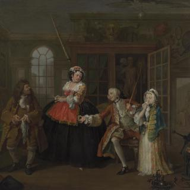
William Hogarth, 'Marriage A-la-Mode: 3, The Inspection', about 1743
William Hogarth, 'Marriage A-la-Mode: 3, The Inspection', about 1743
Overview
The third scene in the series of six paintings by Hogarth titled Marriage A-la Mode is set in the consulting room of the French doctor M. de la Pillule. Viscount Squanderfield is accompanied by a sickly looking little girl and a woman who is probably the girl’s mother and madam.
The child stands between the Viscount’s open legs, while he sits with a pill box beside his groin, suggesting that she is ‘his’ girl and that they are both there to be treated for a sexually transmitted disease. Brandishing his cane, the Viscount seems to be protesting that the doctor’s pills don't work. The pills are of black mercury, matching the black mark on the Viscount’s neck that Hogarth uses to denote syphilis. The doctor himself is riddled with the disease. His consulting room is full of extraordinary objects including machines for setting shoulders and drawing corks.
In-depth
The third scene in the series of six paintings by Hogarth titled Marriage A-la Mode is set in the consulting room of the French doctor M. de la Pillule. Viscount Squanderfield is accompanied by a sickly looking little girl and a woman with a folding pocket-knife who is probably the girl’s mother and madam.
The woman’s sleeves are cut from the same gold brocade as the little girl’s skirt which, as well as the apron, is far too long, suggesting she may be wearing her mother’s clothes. The tattoo ‘FC’ above the woman’s left breast was inflicted on convicted prostitutes, and it seems she has consigned her daughter to the same profession. Her dress is too gaudy to be ladylike and she has black spots on her face to indicate that she, like the Viscount and the doctor himself, is infected with venereal disease. She appears furious that the Viscount has infected her daughter. Whether it was he who infected the child is far from certain but it seems likely he will have to pay handsome damages.
The little girl stands between the Viscount’s open legs, while he sits with a pill box beside his groin, suggesting that she is ‘his’ girl and that they are both there to be treated for a sexually transmitted disease. Brandishing his cane, the Viscount seems to be protesting that the doctor’s pills don't work. The pills are quite clearly black, matching the black mark on the Viscount’s neck that Hogarth uses to denote syphilis. The main treatment for venereal disease at this time was pills made from mercury. Veneral disease was rife during this period and easily caught, but not so easily cured.
The doctor himself is riddled with the disease – the sunken bridge of his nose, his bulging forehead, thick lips, probable toothlessness and deformed legs are all consistent with an advanced degree of congenital syphilis. The skull on the table is pocked with small black holes which indicate erosions caused by the disease. It seems unlikely that the doctor’s pills will work if he cannot cure himself.
His consulting room is full of extraordinary objects which suggest that he practises as a physician, surgeon, barber-surgeon, apothecary and chemist. The alarming metal machines on the right are described in the open book as used for setting shoulders and drawing corks. The cabinet behind the Viscount displays a narwhal horn, a pile of bricks, a barber’s shaving bowl, a large urine flask, a head that might act as an apothecary’s shop sign, a giant’s femur, a stuffed crocodile and an ostrich egg, among other curiosities.
The skeleton in the cupboard seems to be propositioning the anatomical model, associating illicit sex with death – and suggesting that something is going on behind the Viscount’s back. The tripod on the top of the cupboard above the anatomical model’s head is a presage of the three-sided gallows tree which will feature in the final scene of this series of paintings. It may also refer to the anatomical model’s own origin – the only corpses which anatomists could lawfully obtain were those of executed criminals.
- NG number
- NG115
- Date made
- About 1743
- Medium
- Oil on canvas
- Dimensions
- 69.9 × 90.8 cm

William Hogarth, 'Marriage A-la-Mode: 4, The Toilette', about 1743
William Hogarth, 'Marriage A-la-Mode: 4, The Toilette', about 1743
Overview
The fourth scene of Hogarth’s Marriage A-la-Mode takes place in the wife’s bedroom. Now a Countess, she is following the aristocratic French fashion of receiving visitors as she finishes getting dressed. A coral baby’s teether hanging from the back of her chair indicates that she has become a mother. The Countess does not look at herself in the mirror – she only has eyes for her lover Silvertongue, who offers her a ticket to a masquerade.
An opera singer and his flautist entertain the Countess’s guests while a manservant offers them cups of chocolate. A little page boy holds a statue of Actaeon, whom the chaste goddess Diana transformed into a stag and then caused to be killed by his own hounds. The boy laughs as he points at Actaeon’s antlers, which represent the horns of a cuckold (the husband of a woman who commits adultery) as the Countess has proved her husband to be.
In-depth
The fourth scene of Hogarth’s Marriage A-la-Mode takes place in the wife’s bedroom. She is now Countess: an Earl’s coronet above the bed informs us that the Earl of Squander must have died and that the young couple have lost no time displaying their new rank.
The Countess is sitting at her dressing table, the mirror of which is also surmounted with a coronet. She is following the aristocratic French fashion of receiving visitors during the final stage of her toilette (morning grooming ritual). Her hairdresser tests the heat of his curling tongs on a piece of paper. A coral baby’s teether hangs from the back of the Countess’s chair, indicating that she is now a mother and that she sees her child occasionally, though it does not appear until the final scene. The Countess does not look at herself in the mirror – she only has eyes for her lover Silvertongue, who demonstrates his lack of manners and his privileged place in the house by putting his feet up on the sofa.
An opera singer, probably modelled on a famous Italian castrato singer, and his flautist entertain the Countess’s guests while a manservant offers them cups of chocolate. A painting after Michelangelo’s Rape of Ganymede above the man with horn-shaped curling papers in his hair may suggest his homosexuality – it shows Jupiter in the form of an eagle abducting the beautiful young hero Ganymede. A large portrait of Silvertongue is prominently displayed beside the Countess’s bed. On the other wall, above the Countess, are two paintings after Correggio. Io throws her head back in ecstasy in the embrace of Jupiter disguised as a cloud, and Lot’s daughters get him drunk so he will sleep with them and perpetuate the human race. A collection of visiting and playing cards lie scattered on the floor from new aristocratic acquaintances inviting the Countess to various events.
Turning her back on her visitors, the Countess listens only to Silvertongue, who offers her a ticket to a masquerade. He gestures with his other hand to a painted screen on which Hogarth has depicted a masquerade in progress. He points to a couple dressed as a friar and a nun, as though suggesting that he and the Countess should adopt those disguises. Masquerades had become increasingly popular from the early eighteenth century
As continuing evidence of her bad taste, the Countess’s recent purchases have been spread out before her, still bearing their auction lot numbers. She has purchased more items similar to those on the mantelpiece in Scene 2 and a dish decorated with Leda being seduced by Jupiter disguised as a swan. A little page boy holds a statue of Actaeon, whom the chaste goddess Diana transformed into a stag and then caused to be killed by his own hounds. The boy laughs as he points at Actaeon’s antlers, which represent the horns of a cuckold (the husband of a woman who commits adultery) as the Countess has proved her husband to be.
- NG number
- NG116
- Date made
- About 1743
- Medium
- Oil on canvas
- Dimensions
- 70.5 × 90.8 cm

William Hogarth, 'Marriage A-la-Mode: 5, The Bagnio', about 1743
William Hogarth, 'Marriage A-la-Mode: 5, The Bagnio', about 1743
Overview
This is the fifth scene of Hogarth’s series of six paintings titled Marriage A-la-Mode. After the masquerade, the Countess and her lover Silvertongue have taken a room above the Turk’s Head – a Turkish baths, or Bagnio. The scene is set at night by firelight; the Countess’s hooped underskirt, whalebone corset, fashionable shoes and mask have been discarded on the floor beside the rumpled four-poster bed.
The Earl has burst into the room and been fatally stabbed by Silvertongue, who now flees in his nightshirt out of the open window. The Countess falls to her knees before her husband and begs for his mercy, two tears glistening on her cheek. As death overcomes the Earl, the syphilitic black spot on his neck is as conspicuous as ever. The proprietor of the Turk’s Head bursts in to investigate the cause of the commotion. He has summoned a constable who carries his staff of office and a night watchman with his lantern held aloft.
In-depth
This is the fifth scene of Hogarth’s series of six paintings titled Marriage A-la-Mode. After the masquerade, the Countess and her lover Silvertongue have taken a room above the Turk’s Head – a Turkish baths, or Bagnio. Turkish merchants established Turkish baths in London, often with coffee houses attached. Although some were respectable establishments, others became known as houses of ill repute, as seems to be the case here.
The scene is set at night by firelight; the Countess is dressed in her nightgown and cap, and her hooped underskirt, fashionable shoes and mask have been discarded on the floor beside the rumpled four-poster bed. Such was the abandon with which the Countess threw off her whalebone corset that it has toppled the rush-seated chair. The lace of the corset falls over the bundle of faggots – at the time, derogatory slang for a prostitute – and begins to smoulder against the burning tip of a faggot fallen from the fire, recalling the proverb ‘Kindle not a fire that you cannot extinguish’.
The Earl has burst into the room and been fatally stabbed by Silvertongue, who now flees in his nightshirt out of the open window. The Countess falls to her knees before her husband and begs for his mercy. Hogarth depicts the Earl in a slow, dying fall, his long ungainly legs about to cave in. His head is framed by the looking glass behind him, reminding us of his first appearance, when he was idly contemplating his own reflection in the mirror. As death overcomes the Earl, the syphilitic black spot on his neck is as conspicuous as ever.
Silvertongue’s blood-soaked sword lies on the floor across the shadow of a pair of fire tongs, which echo the Earl’s long ungainly legs. A tapestry of the Judgement of Solomon hangs on the back wall. The woman in the portrait hanging above the table holds a squirrel, also derogatory slang for a prostitute, and dangles the handle of a parasol beneath her waist; the man’s legs that appear on the tapestry below the picture add to its lewd implications. The legs may be intended to remind contemporary viewers of Samuel McPherson, Corporal in the Higland Regiment, who was shot for desertion in 1743 and was the subject of a popular engraving. McPherson’s legs are next to the bare legs of Silvertongue as he deserts the Countess and flees out of the window. A candle flame below the picture flickers wildly in the draft between the open window and the open door as the proprietor of the Turk’s Head bursts in to investigate the cause of the commotion. He has summoned a constable who carries his staff of office and a night watchman with his lantern held aloft.
The Countess’s tears, glistening on her cheek, cannot extinguish the fire she has started. Her husband is mortally wounded and her murderous lover has deserted her and fled. The painted woman’s parasol handle points down to the kneeling Countess to suggest that they are just as bad as each other.
- NG number
- NG117
- Date made
- About 1743
- Medium
- Oil on canvas
- Dimensions
- 70.5 × 90.8 cm
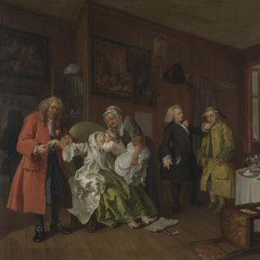
William Hogarth, 'Marriage A-la-Mode: 6, The Lady's Death', about 1743
William Hogarth, 'Marriage A-la-Mode: 6, The Lady's Death', about 1743
Overview
This is the final scene of Hogarth’s series of six paintings, Marriage A-la-Mode. The wretched Countess, dogged by the scandal following Silvertongue’s arrest, trial and sentence to death for the murder of her husband the Earl, has returned to her father’s house in the City of London.
On receiving news that Silvertongue has been hanged at Tyburn, the Countess has drunk laudanum; the bottle lies empty on the floor. An old nurse lifts the Countess’s child – deformed by congenital syphilis – to kiss her goodbye. The penny-pinching Alderman removes a ring from his daughter’s finger rather than offering comfort as she takes her final breaths.
The doctor wanders out behind the Alderman – there’s nothing more he can do. He appears to admire the whole row of fire buckets hanging on the wall in the hallway. The Alderman, unlike his dying daughter, never starts a fire he can't extinguish.
In-depth
This is the final scene of Hogarth’s series of six paintings, Marriage A-la-Mode. The wretched Countess, dogged by the scandal following Silvertongue’s arrest, trial and sentence to death for the murder of her husband the Earl, has returned to her penny-pinching father’s house in the City of London, overlooking old London Bridge. A newly printed broadsheet with the words ‘Counseller Silvertou.../last dying speech...’ lies at her feet. On it is an image of the three-sided gallows at Tyburn – foreshadowed by the tripod in the third scene – where Silvertongue has been hanged by the neck.
Her lover dead, the Countess has drunk laudanum – probably the entire contents of the bottle now lying empty on the floor. An old nurse lifts the Countess’s child to kiss his or her mother goodbye (it was common at the time to dress boys in skirts until they were about eight years old). It’s all too clear that the child has congenital syphilis to an advanced degree, as indicated by the black spot on its cheek and sunken bridge of its nose. Its legs are also deformed by the disease and encased in surgical boots and braces. This group of mother, nurse and child parodies the final scene in many a novel of virtue rewarded, above all of Samuel Richardson’s Pamela, which Hogarth had been invited to illustrate. The Countess’s child is unlikely to live long, bringing to an abrupt end the family tree so proudly displayed by the Earl of Squander in the first scene.
Suicide was a crime in England until 1961, and a suicide’s possessions had to be given up to the Crown until 1822 – the Alderman prudently removes a ring from his daughter’s finger rather than troubling himself to say goodbye to her as she takes her final breaths. In grabbing her arm, he prevents his daughter from returning her own child’s embrace. He is dressed as he was in the first scene; he is a man of neither fashion nor taste. The pictures in his house are all of Dutch low-life scenes with broad bourgeois jokes.
The table is set for a meagre meal: a boiled egg sits upright on a plate of rice; the starved dog gnaws at the ear of the pig’s head which, with its upturned nose and gaping mouth, echoes the expression of the dying Countess. The silver punch bowl on the table – probably presented to the Alderman after a period of office rather than bought – is the only luxury item in the room. The still life on the cloth-covered table may be a deliberate parody of Chardin’s work, which Hogarth may have seen in Paris.
The apothecary, who wears a posy in his buttonhole, appears to have a stomach pump and bottle of syrup in the pocket of his black coat. He is making a great show of accusing the half-witted servant of procuring the Countess’s bottle of laudanum, but he may have been treating the Countess himself with it and now fears blame because she has drunk the lot.
The doctor wanders out behind the Alderman – there is nothing more he can do. He appears to admire the whole row of fire buckets hanging on the wall in the hallway, each lettered with ’s‘ for sand. The Alderman, unlike his dying daughter, never starts a fire he can’t extinguish.
- NG number
- NG118
- Date made
- About 1743
- Medium
- Oil on canvas
- Dimensions
- 69.9 × 90.8 cm

William Hogarth, 'The Graham Children', 1742
William Hogarth, 'The Graham Children', 1742
Overview
These are the four Graham children. Their father was Royal Apothecary to George I and George II. Thomas, in his gilded baby carriage adorned with a bird, had already died when Hogarth was working on the picture. The crossed carnations (funeral flowers) beside him are a tender reminder of death. A table-clock surmounted by a winged cherub holding an hour-glass and scythe shows the time as 1.45pm, perhaps the hour Thomas died.
Seated beneath a goldfinch in a gilded cage, Richard Robert plays a bird organ and Anna Maria starts dancing. The cat startles the goldfinch by scrambling with its claws up the back of the chair in the same way that death suddenly snatched the youngest Graham child. Henrietta, the eldest, dangles cherries, the ‘fruit of paradise’ before baby Thomas, who reaches out to grasp them. Hogarth captures the transience of childhood and of life itself.
In-depth
These are the four children of Daniel Graham (1695–1778) by his second wife, Mary Crisp. In order of age they are Henrietta Catherine (aged 9), Richard Robert (aged 7), Anna Maria (aged 5) and Thomas the baby in a gilded carriage decorated with a bird. They are portrayed at home at 11 Pall Mall, London. Their father was Royal Apothecary to King George I and King George II and was very prosperous.
In this very large picture – one of the largest Hogarth ever painted – the Graham children are portrayed life-size. At first sight they seem to be merrily at play, with high spirits and evident health. There are no conventional toys here. Instead, Hogarth uses various objects to tell us about the children and about the nature of childhood itself.
The extravagant baby carriage has a carved and gilded bird upon its handle, which perhaps flapped its wings when the carriage was pulled along. Beside the carriage is an elaborate silver dish full of fruit. Thomas, the seemingly lively baby, had already died while Hogarth was working on the picture. His death may have been the reason the portrait was commissioned. Hogarth drew a chalk study of the baby’s features after death from which to work (British Museum, London). In the painting, Thomas clutches a partly nibbled rusk and reaches out to grasp the cherries in his sister’s hand, which traditionally symbolise the fruit of paradise. The silver basket of fruit and the crossed carnations (funeral flowers) beside the baby’s chariot become a tender memento mori, a reminder of death. A table-clock surmounted by a winged cherub holding an hour-glass and scythe – symbols of death – shows the time to be about 1.45pm, maybe the hour Thomas died.
Seated beneath a goldfinch in its gilded cage, Richard Robert balances a bird organ on his knee and little Anna Maria starts dancing, holding out her pretty silk brocade skirts. This type of small domestic barrel organ was a device used to teach caged birds to sing. The side of the box is decorated with a scene of Orpheus with his lyre. In ancient Greek myth, Orpheus attempted to retrieve Eurydice from the underworld with his music – reminding us of lost baby Thomas. The goldfinch is a traditional symbol of Christ’s Passion, and here also a metaphor for baby Thomas in his gilded carriage. The cat startles the goldfinch by scrambling with its claws up the back of the chair in the same way that death suddenly snatched one of the Graham children from their wealthy home. The goldfinch and cherries express the hope for Thomas’s resurrection through Christ. Only the Almighty and Hogarth – through the immortalising power of portraiture – can bring the baby ‘back to life’.
Henrietta, the eldest child, guides her lost baby brother’s hand towards the cherries. Her long muslin apron tucked over her arm falls in a long s-curve embodying Hogarth’s ‘line of beauty.’ She later married at 19 and had seven children of her own. Hogarth captures the transience of childhood and of life itself in this charming and moving portrait.
- NG number
- NG4756
- Date made
- 1742
- Medium
- Oil on canvas
- Dimensions
- 160.5 × 181 cm

William Hogarth, 'The Painter and his Pug', 1745
William Hogarth, 'The Painter and his Pug', 1745
Overview
Hogarth’s self portrait is a statement about his professional ambitions. His oval canvas is propped up on books by famous British authors. The curved line on his palette represents the ‘Line of Beauty and Grace’, which he believed underpinned all harmony in art and nature. His casual clothes create a down-to-earth appearance. His pet pug, Trump, alludes to the artist’s own pugnacious character.
This painting was purchased from the collection of Sir John Julius Angerstein to found the National Gallery in 1824. Hogarth’s celebrated series Marriage A-la Mode and Sir David Wilkie’s The Village Holiday also formed part of the original purchase. Hogarth’s The Painter and his Pug and the work by Wilkie were both transferred to the Tate Gallery, Millbank, during the twentieth century.
In-depth
Hogarth’s self portrait is a statement about his professional ambitions. His oval canvas is propped up on books by famous British authors. The curved line on his palette represents the ‘Line of Beauty and Grace’, which he believed underpinned all harmony in art and nature. His casual clothes create a down-to-earth appearance. His pet pug, Trump, alludes to the artist’s own pugnacious character.
This painting was purchased from the collection of Sir John Julius Angerstein to found the National Gallery in 1824. Hogarth’s celebrated series Marriage A-la Mode and Sir David Wilkie’s The Village Holiday also formed part of the original purchase. Hogarth’s The Painter and his Pug and the work by Wilkie were both transferred to the Tate Gallery, Millbank, during the twentieth century.
- NG number
- L1356
- Date made
- 1745
- Medium
- Oil on canvas
- Dimensions
- 90 × 69.9 cm

William Hogarth, 'The Shrimp Girl', about 1740-5
William Hogarth, 'The Shrimp Girl', about 1740-5
Overview
Hogarth certainly painted this sketch from life, and although he may never have known the girl’s name, this is definitely a portrait of an individual. For at least a century before and after Hogarth painted The Shrimp Girl, most of the travelling sellers of shellfish in London were women, usually the daughters or wives of fishmongers in Billingsgate Fish Market.
Hogarth sketched a half-pint measure in the basket balanced on his shrimp girl’s head. A few darker shells suggest that she also sells mussels, and perhaps cockles, as well as shrimps. She wears a dark sou'wester, a hat traditionally worn by fisherman, and a cloak, probably of oilskin, but nothing can dim the sense of life and character she radiates.
The Shrimp Girl appears unique among Hogarth’s single-figure oil sketches in being painted from life, spontaneously and for its own sake. The speed with which it was painted adds to its sense of truth and liveliness.
In-depth
For at least a century before and after Hogarth painted The Shrimp Girl, most of the travelling sellers of shellfish in London were women, usually the daughters or wives of fishmongers in the market. The women would set out from Billingsgate Fish Market dressed in oilskin cloaks and sou‘westers, a hat traditionally worn by fisherman, with the shellfish in a basket balanced on their heads. They would go through the London streets calling out which shellfish they had for sale and how much they cost per half-pint.
Hogarth sketched a half-pint measure in his shrimp girl’s basket. A few darker shells suggest that she also sells mussels, and perhaps cockles, as well as shrimps. She wears a dark hat and cloak, probably of oilskin, but nothing can dim the sense of life and character she radiates. Her lips are spread in a smile – or perhaps she’s talking – and we can see her teeth, which is unusual in portraits of the time and adds to the image’s feeling of truth and immediacy. After Hogarth’s death, when some critics tried to lessen his reputation, Mrs Hogarth reputedly liked to show visitors this picture and comment: ’They say he could not paint flesh and blood. There’s flesh and blood for you: – them!‘
Although Hogarth may never have known the girl’s name, this painting is certainly a portrait. Compared with the pictures of pretty street sellers which became popular some 50 years later, such as John Hoppner’s Girl with Sallad (Colby College Art Museum, Waterville, Maine, USA), exhibited at the Royal Academy in 1782, and Francis Wheatley’s Itinerant Trades of London, engraved 1793–5, Hogarth’s image is direct and unpatronising. He recognises that the ’Shrimp Girl‘ is an individual in her own right, and does not presume to tidy her up.
We do not know of any similar single-figure oil sketches by Hogarth. The Shrimp Girl appears unique in being painted from life, spontaneously and for its own sake. It is thinly painted, without using many layers of paint to build up the forms, and the ground is still visible in many places. Particularly in the girl’s dress and cloak, Hogarth’s brushstrokes are broad, rough and unblended, in places looking almost as though he’s scrubbed the canvas with his brush. The speed with which the picture was painted adds to its feeling of liveliness.
The Shrimp Girl remained in Hogarth’s studio during the last 20 years or so of his life. He did not add a single brushstroke to her image, as he believed that ’if a thing is good, the action and the passion may be more truly and distinctly conveyed by a coarse bold stroke than the most delicate finishing'.
- NG number
- NG1162
- Date made
- About 1740-5
- Medium
- Oil on canvas
- Dimensions
- 63.5 × 52.5 cm
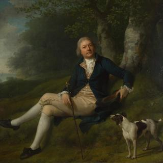
Jens Juel, 'Joseph Greenway', 1788
Jens Juel, 'Joseph Greenway', 1788
Overview
Born in Devon, Joseph Greenway made his fortune captaining Danish cargo ships and became a Danish citizen in 1786. On his return to Britain, his wealth enabled him to rise in English society. He was Sheriff of Exeter from 1802 to 1803 and Mayor of the city from 1804 to 1805.
In this highly sympathetic portrait, painted in Denmark in the summer of 1788, the Danish painter Jens Juel presents Greenway as an English gentleman accompanied by his hunting dog. Greenway’s open expression and relaxed pose reveal a man at ease with himself and comfortable in his surroundings. The portrait is full of meticulous observation, both of Greenway and of the shaded woodland that surrounds him. His pose and the rural setting have echoes of Thomas Gainsborough’s John Plampin, also in the National Gallery’s collection. The landscape setting is the coast of the Sound, 12 miles north of Copenhagen, and the ships on the horizon allude to Greenway’s nautical career.
In-depth
Born in Devon, Joseph Greenway made his fortune captaining Danish cargo ships and became a Danish citizen in 1786. On his return to Britain, the wealth he had amassed enabled him to rise in English society. He was Sheriff of Exeter from 1802 to 1803 and Mayor of the city from 1804 to 1805. However, family tradition states that he lost his fortune in speculation, and by 1821 he was recorded as having died bankrupt.
In this highly sympathetic portrait, painted in Denmark in the summer of 1788, the Danish painter Jens Juel presents Greenway as an English gentleman accompanied by his hunting dog. As the dog looks up at him, Greenway in turn looks at us, his open expression and relaxed pose revealing a man at ease with himself and comfortable in his surroundings. The absence of a wig enhances the effect of informality. The portrait is full of meticulous observation – for example, the contrast between Greenway’s pale forehead (perhaps protected from the sun by the wide brim of the hat he is holding) and the darker, more weathered skin tones of the rest of his face. Juel is equally attentive to the various textures of Greenway’s clothes, particularly as they catch the light, such as the gleaming buttons on his waistcoat.
Juel similarly observes the natural world with an almost scientific precision, including the bark of the beech tree behind Greenway (on which Juel’s name and the date 1788 have been carved) and the tiny plants and flowers on the grassy bank. But he is equally alert to broader atmospheric effects. Using subtle bands of green to structure the landscape, he creates a vista that leads our eye from the enclosed and shaded woodland grove in the foreground to the bright area of sky beyond. The landscape itself is probably the park of Enrum, a country house 12 miles north of Copenhagen on the coast of the Sound, which was owned by Greenway’s Danish business associate, Conrad Fabritius de Tengnagel. The ships you can just see on the horizon allude to Greenway’s nautical career.
Greenway’s pose and the rural setting have echoes of Thomas Gainsborough’s John Plampin, which may in turn derive from Watteau’s portrait of Antoine de Laroque, painted around 1719. Laroque’s right leg had been amputated above the knee, having been smashed by a cannonball, and in the portrait he is reclining with his damaged leg stretched out before him. Although now lost, the portrait was widely known through an engraving made in 1734. Juel may also have known of Johann Heinrich Wilhelm Tischbein’s Goethe in the Roman Campagna (Städel Museum, Frankfurt), which shows the famous writer reclining in a landscape and was painted just a year before the Greenway portrait.
Juel was a highly successful artist, known mainly for his portraits, who had travelled widely in Europe before returning to Copenhagen in 1780. By the time he painted his portrait of Greenway, he had been elected unanimously to the Royal Danish Academy of Art in 1782 and was to become its director in 1795. Despite his fame as a portrait painter, Juel’s greatest influence was perhaps through his landscapes. Their combination of precision and atmospheric effect, without recourse to dramatic scenes or exotic locations, was an important model for his students. Among them was Caspar David Friedrich, who studied in Copenhagen in the 1790s.
- NG number
- NG6341
- Date made
- 1788
- Medium
- Oil on canvas
- Dimensions
- 79.8 × 99.1 cm
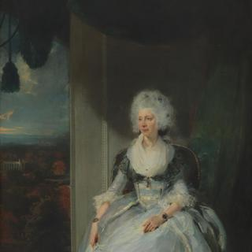
Sir Thomas Lawrence, 'Queen Charlotte', 1789
Sir Thomas Lawrence, 'Queen Charlotte', 1789
Overview
Thomas Lawrence was only 20 when he painted this, one of the most brilliant of all royal portraits. Yet it failed to please either King George or Queen Charlotte and did not enter the Royal Collection. It remained in Lawrence’s hands and was in his studio sale after his death.
Lawrence painted Queen Charlotte in Windsor Castle – the Chapel of Eton College can be seen in the distance. The Queen was troubled by her husband’s protracted mental illness and was in no mood to sit for the young painter. The sitting on 28 September was probably the only one she gave him. Lawrence found it hard to animate her expression, and had to repaint her features several times.
Lawrence has given the pearl bracelets, decorated with the King’s portrait and his monogram, a significant role in the portrait, as if demonstrating the Queen’s unwavering loyalty to her husband amid his difficulties.
In-depth
Thomas Lawrence was only 20 when he painted this, one of the most brilliant of all royal portraits. Yet it failed to please either King George or Queen Charlotte and did not enter the Royal Collection. It remained in Lawrence’s hands and was in his studio sale in 1831 after his death.
Queen Charlotte (1744–1818) was born in the small North German duchy of Mecklenburg-Strelitz. She arrived in England on the day before her marriage to George III on 8 September 1761 and was jointly crowned with him on 22 September 1761. The art historian and politician Horace Walpole described her as ’sensible and quick‘ in understanding with ’much grace in her manner‘ but no one pretended that she had good looks. Her devotion to the King was absolute, despite many trials, and she bore him 15 children, all but two surviving infancy.
Lawrence painted Queen Charlotte in Windsor Castle, possibly at the suggestion of one of her ladies-in-waiting, Lady Cremorne, who Lawrence had portrayed the previous year (Tate, London). The Queen was troubled by her husband’s protracted mental illness and by political events unfolding in France and was in no mood to sit for the young painter. The sitting on 28 September was probably the only one she gave him.
The Queen arrived wearing a bonnet, but since Lawrence objected to it she decided to sit bare-headed as her hair was noted for its beauty. Although one of her daughters read to her, this did not lift her spirits. Reportedly the Queen also found Lawrence’s suggestion that she should converse with her daughter to animate her features ’rather presuming‘. Infrared and X-ray images of the head show that Lawrence found it hard to enliven her expression, and had to repaint her face several times.
Lawrence implored the Queen for one more brief sitting so that he might paint her jewels, several of which were wedding presents from the King. The Queen refused, but allowed the Assistant Keeper of her Wardrobe to model the jewellery for Lawrence.
The pearl bracelets, decorated with the King’s portrait and his monogram, were especially important to the Queen. Lawrence has given them a significant role in the portrait, as if demonstrating her unwavering loyalty to her husband amid his difficulties. The notes of black in the hair bows lead our eye to the scarf, bracelets and pattern of lozenges in the carpet, lending elegance to the Queen’s figure. The building glimpsed through the trees in the background is the Chapel of Eton College, Windsor, established by Henry VI.
The King told Lawrence to have the finished portrait engraved, as he planned to send it to his relatives in Hanover. Lawrence’s shortage of money saved the portrait from export as he couldn’t afford to have it engraved. Although the Queen considered the portrait a failure, it met with critical acclaim at the Royal Academy. On seeing the young Lawrence’s exhibit of 11 paintings, Sir Joshua Reynolds, the Academy’s president, is said to have remarked to Lawrence, ‘In you, sir, the world will expect to see accomplished all that I have failed to achieve’. On Reynolds’s death in 1792, Lawrence was appointed Principal Painter to the King.
- NG number
- NG4257
- Date made
- 1789
- Medium
- Oil on canvas
- Dimensions
- 239.5 × 147 cm

Sir Henry Raeburn, ''The Archers'', about 1789-90
Sir Henry Raeburn, ''The Archers'', about 1789-90
Overview
‘The Archers’ is one of a small number of outstanding portraits from the early part of Raeburn’s career and was probably painted in about 1789 or 1790, when the subjects were in their late teens. Robert and Ronald Ferguson became members of the Royal Company of Archers in 1792 and 1801 respectively, and the contemporary revival of archery as a fashionable sport appears to have inspired the composition.
The two brothers are shown in a striking and complex geometrical arrangement that plays on tonal contrasts. Robert, in wonderfully outlined profile, is lit from the left, while Ronald behind him is shown entirely in shadow, gazing out at the viewer while framed in the tautened bow held by his elder brother. The horizontal arrow precisely divides the canvas in two. The way the figures are arranged resembles a classical sculptural frieze – appropriate to Scotland of the Enlightenment, when a renewed interest in antiquity influenced the thought and aesthetics of the country.
In-depth
‘The Archers’ is one of a small number of outstanding portraits from the early part of Raeburn’s career, in which he used an exceptionally accomplished and subtle combination of arresting compositions and dramatic lighting to create a sense of intimacy between the viewer and the sitters.
The portrait was probably painted in about 1789 or 1790, when the subjects were in their late teens. Robert and Ronald Ferguson became members of the Royal Company of Archers in 1792 and 1801 respectively, and the contemporary revival of archery as a fashionable sport appears to have inspired the composition. In 1770 Reynolds, the dominant English portraitist, had exhibited his portrait of two archer friends, Thomas Townshend and Colonel Acland, at the Royal Academy in London (now at Tate Britain, London). However, it is unlikely that Raeburn ever saw that painting and Reynolds’s over-charged, full-length action portrait is quite different to Raeburn’s rational and still approach.
The two Ferguson brothers are shown in a striking and complex geometrical arrangement that plays on tonal contrasts. The left-hand boy’s powdered hair and dominant position imply that he is Robert, the elder brother (although family tradition identifies the brothers the other way round). In a wonderfully outlined profile, he is lit from the left, while Ronald behind him is shown entirely in shadow, gazing out at the viewer while framed in the tautened bow held by his brother. The horizontal arrow precisely divides the canvas in two. The way the figures are arranged resembles a classical sculptural frieze – appropriate to Scotland of the Enlightenment, when classicism and a renewed interest in antiquity influenced the thought and aesthetics of the country. The stillness, darkness and broad, confident application of paint combine to create a sense of hushed atmosphere, which is at once formal and verging on the romantic. The bold but sensitive manner of painting recalls some of the double portraits of courtiers by Van Dyck in the previous century, such as Lord John Stuart and his brother Lord Bernard Stuart.
Robert Ferguson became a Whig Member of Parliament and succeeded his father to the estate of Raith in 1810. He was a dedicated collector of books and pictures. Ronald joined the Army and had a distinguished and varied career, becoming general in 1830 and also sitting in parliament. The Scottish lawyer and literary figure Lord Cockburn (1779–1854) said of them: ‘Nothing could be more beautiful than the mutual affection of these handsome, gentlemanlike, and popular brothers.’
It was works such as The Archers that established Raeburn’s long and successful career as a portraitist. He was the first Scottish artist to be able to pursue such a career from Edinburgh rather than London. The Ferguson family also commissioned other portraits from Raeburn, including a full-length portrait of Robert out shooting with his dog (private collection) of about the same period as The Archers.
The Archers remained in the Ferguson family collection until it was acquired in 2000 by the National Gallery under the Acceptance in Lieu scheme.
- NG number
- NG6589
- Date made
- About 1789-90
- Medium
- Oil on canvas
- Dimensions
- 110.5 × 123.6 cm

Sir Joshua Reynolds, 'Anne, 2nd Countess of Albemarle', about 1760
Sir Joshua Reynolds, 'Anne, 2nd Countess of Albemarle', about 1760
Overview
Lady Anne, 2nd Countess of Albemarle, is approaching 60 in this portrait. She is the widow of William-Anne Keppel, 2nd Earl of Albemarle, with whom she had 15 children, although only four sons and two daughters survived childhood. She holds a shuttle and is engaged in ‘knotting’ – a pastime involving making knots in thread which could then be sewn as decoration onto other items. A pair of scissors and a workbasket lie on the table beside her. Her face is almost dead-white because the paint has been bleached by the light.
The idea that Lady Albemarle should be painted by Reynolds almost certainly came from her second son, Augustus Keppel, a Commodore in the Royal Navy whom Reynolds portrayed at least seven times. Lady Albemarle sat for Reynolds 11 times between 26 September 1757 and 28 June 1759 and the portrait was finished by 1760, although Reynolds was not paid for it for a further 12 years.
In-depth
Anne 2nd Countess of Albemarle was born Lady Anne Lennox on 24 June 1703. She was the younger daughter of Charles Lennox, 1st Duke of Richmond (1672–1723), who was himself the illegitimate son of King Charles II and Louise de Keroualle.
On 21 February 1722, she married William-Anne Keppel, 2nd Earl of Albemarle, who was a courtier, Colonel of the Coldstream Guards, Knight of the Garter and Groom of the Stole. She became a Lady of the Bedchamber to Queen Caroline and a favourite of George II, and in 1743 escorted their youngest daughter, Princess Louisa, to Denmark to be married. Anne’s husband, the Earl, was famously extravagant, squandering his own fortune of £90,000 as well as his wife’s dowry of £25,000. They had 15 children, but only four sons and two daughters survived childhood. Albemarle was appointed ambassador to Paris, where he died on 22 December 1754. George II awarded Lady Albemarle a pension of £1,200 a year and she lived for a further 35 years.
Lady Albemarle is approaching 60 in this portrait, and the swirling rococo design of her dress would have been slightly old-fashioned by the end of the 1750s. She holds a shuttle and is engaged in ‘knotting’ – a pastime involving making knots in thread which could then be sewn as decoration onto other items. A pair of scissors and a workbasket lie on the table beside her. Knotting required less skill than embroidery but gave the impression of a useful activity. However, not a single knot is visible in Lady Albemarle’s thread.
She was a robust woman, who managed to scare off her muggers in 1750, when nine men ambushed and robbed her in London. By 1786 she had outlived all of her children. She died in 1789 at the age of 86. Her face in Reynolds’s portrait is almost dead-white as the paint has faded. The red lake pigment has been bleached from the flesh paint by the light. Other areas, such as the edge of the chair back, have also faded.
This portrait was probably commissioned by her eldest son, George 3rd Earl of Albemarle, but the idea that Lady Albemarle should be painted by Reynolds almost certainly came from her second son, Augustus Keppel, a Commodore in the Royal Navy. Reynolds portrayed Keppel at least seven times, and his second dynamic full-length portrait of the Commodore (National Maritime Museum, Greenwich) made his name as a portraitist. During Reynolds’s long friendship with Keppel, he also painted 13 portraits of other members of the family.
Lady Albemarle sat for Reynolds 11 times between 26 September 1757 and 28 June 1759 and the portrait was finished by 1760, although Reynolds was not paid for it for a further 12 years.
- NG number
- NG1259
- Date made
- About 1760
- Medium
- Oil on canvas
- Dimensions
- 126.5 × 101 cm

Sir Joshua Reynolds, 'Captain Robert Orme', 1756
Sir Joshua Reynolds, 'Captain Robert Orme', 1756
Overview
This portrait shows Captain Robert Orme (1725–90) at the age of 31, during the war against the French for supremacy in the North American colonies. Reynolds painted it on speculation in the hope of selling it or displaying it to gain more work.
Orme was aide-de-camp to General Edward Braddock, commander-in-chief of the British forces in America, and was friends with the young George Washington. On 9 July 1755, General Braddock and his forces were ambushed and defeated by French and Native American riflemen near Fort Du Quesne on the Ohio River. In Reynolds’s portrait, Orme seems about to leap on his horse and ride off with reports of the battle. The dispatch he holds is illegible but may carry news of Braddock’s death. The poses of Orme and his horse are derived from a fresco by Jacopo Ligozzi in the church of Ognissanti in Florence, which Reynolds drew in 1752 in his Italian sketchbook.
In-depth
This portrait shows Captain Robert Orme (1725–90) at the age of 31, during the war against the French for supremacy in the North American colonies. The portrait was not commissioned by the sitter or his relatives, and was never owned by him, but was painted on speculation by Reynolds with the hope of selling it or displaying it to gain more work.
Orme was first commissioned as ensign in the 34th Foot. He transferred to the Coldstream Guards on 16 September 1745 and was promoted to lieutenant on 24 April 1751. He was aide-de-camp to General Edward Braddock, commander-in-chief of the British forces in America. Orme became friends with the young George Washington, who in May 1755 volunteered to serve under General Braddock.
On 9 July 1755, General Braddock and his forces were ambushed and defeated by French and Native American riflemen near Fort Du Quesne on the Ohio River. Braddock’s troops were virtually massacred and he was mortally wounded. Orme was also wounded but George Washington was unharmed.
In Reynolds’s portrait, Orme stands beside his horse, as though about to leap on and ride off with reports of the battle. The dispatch in his hand is illegible but it may carry news of Braddock’s death. Orme wears his campaign uniform as an officer of the Coldstream Guards: a scarlet frock-coat with blue lapels and cuffs over a grey waistcoat (all trimmed with broad gold lace), buff breeches and black gaiters over buckled shoes. His sword-belt is worn under his coat and only the hilt and tip show. His long hair is tied behind his neck and a blue and gold sash is looped over his horse’s saddle. Orme’s face, with its urgent, haunted expression, is set against a break in the thunderous clouds and smoke rising from the battlefield, which is glimpsed to the right, below the tails of his coat. The drama, action and heroism of battle are expressed in the Captain’s tense, dynamic stance. The poses of both Orme and his horse are derived from one of the lunette frescoes by Jacopo Ligozzi in the church of Ognissanti in Florence, which Reynolds drew in 1752 in his Italian sketchbook. Copying elements from old master paintings was typical of Reynolds’s approach.
Orme probably sat for the portrait late in 1755, soon after his return to England. Reynolds was keen to keep heroic full-length portraits on display in his studio, so that his sitters might be persuaded to commission something more ambitious than a mere head-and-shoulders likeness of themselves. For a time, Captain Orme hung with Reynolds’s portrait of Commander Augustus Keppel (National Maritime Museum, Greenwich), where it drew much notice for its ‘boldness and singularity’. Perhaps Reynolds also hoped that a portrait of a military hero might attract an engraver and so increase his own fame. However, Captain Orme was never engraved. The painting was eventually bought in December 1777 by 5th Earl of Inchiquin, simply as a fine example of Reynolds’s work.
- NG number
- NG681
- Date made
- 1756
- Medium
- Oil on canvas
- Dimensions
- 239 × 147 cm

Sir Joshua Reynolds, 'Lady Cockburn and her Three Eldest Sons', 1773
Sir Joshua Reynolds, 'Lady Cockburn and her Three Eldest Sons', 1773
Overview
This painting of Lady Cockburn (1749–1837) with her three energetic infant boys combines a portrait of an individual with the personification of a virtue. It is based on traditional pictures of Charity, one of the three theological virtues, often shown as a mother selflessly caring for her children. Reynolds largely based his composition on Van Dyck’s Charity of 1627–8, and James, the child kneeling on Lady Cockburn’s lap, is an almost direct copy of Cupid in Velázquez’s The Toilet of Venus. Both paintings are now also in the National Gallery’s collection. Reynolds frequently ‘invented’ new pictures from a variety of artistic sources.
The brightly coloured macaw, painted from life, is probably Reynolds’s own bird, hated by his housemaid but reportedly tame enough to perch on the wrist of his friend, Dr Johnson.
In-depth
This portrait of Augusta Anne, Lady Cockburn (1749–1837) with her three energetic infant boys was commissioned by her husband and is based on traditional pictures of Charity, one of the three theological virtues. Charity is often shown as a mother selflessly caring for her children. Although Reynolds’s composition is largely based on Van Dyck’s Charity of 1627–8, he has not simply copied the picture but adopted and adapted elements from it and various other sources.
James (1771–1852), the child kneeling on Lady Cockburn’s lap, is an almost direct copy of Cupid in Velázquez’s The Toilet of Venus. Reynolds could only have known Velázquez’s picture from a pencil drawing by the engraver Richard Cooper, as the original painting was in Madrid and had never been engraved. Reynolds often ‘invented’ new pictures from a variety of undisclosed artistic sources. He believed it was perfectly valid to borrow ‘a particular thought, an action, attitude or figure’ and transplant it into his own work.
Reynolds made a small incomplete oil sketch of the upper part of Van Dyck’s Charity from an engraving in which the original image is reversed. He probably didn’t make the little oil sketch for this portrait, but just to help him remember Van Dyck’s composition – he had a vast collection of prints which served as a mine for ideas. Indeed, Reynolds does not appear to have made any figure studies specifically for this portrait.
The commission in 1773 to paint Lady Cockburn with her three sons, all under three years old, gave Reynolds the idea of adapting Van Dyck’s allegory of Charity to a contemporary portrait group, combining the portrait of an individual with the personification of a virtue. Lady Cockburn’s hair is dressed in contemporary fashion and she is preoccupied with the care of her children. She holds baby William (1773–1858) in a position to be nursed, although her breast is modestly covered. George (1772–1853) leans over his mother’s shoulder and looks at us as though about to suck his thumb, while Lady Cockburn gazes distractedly at James, who points upward. The brightly coloured macaw, painted from life, is probably Reynolds’s own bird, hated by his housemaid but reportedly tame enough to perch on the wrist of his friend, Dr Johnson.
The painting is inscribed ‘J REYNOLDS:PINX’ in gold in the lower centre, above the fur-trimmed edge of Lady Cockburn’s mantle, and ‘1773’ in gold at the lower left. Most of the lighter paint has wrinkled, particularly in Lady Cockburn’s costume, in her left hand and in the flesh of the eldest and youngest of the three children.
According to one report, when the picture arrived at the Royal Academy for exhibition in 1774, ‘all the painters then present were so struck with its extraordinary splendour and excellence’ that they suddenly clapped their hands. The portrait was commissioned when the family was doing well financially, but by 1781 Lord Cockburn was declared bankrupt and in her distress Lady Cockburn was granted a private pension by King George III. In 1791, 18 years after the painting had been exhibited at the Royal Academy, it was engraved as Cornelia and her Children. The title referred to a famous anecdote from Roman history: Cornelia, a highly educated aristocratic woman, mother of Tiberius and Gaius Gracchus, did not wear jewellery but called her children her ‘jewels’.
- NG number
- NG2077
- Date made
- 1773
- Medium
- Oil on canvas
- Dimensions
- 141.5 × 113 cm

George Stubbs, 'Whistlejacket', about 1762
George Stubbs, 'Whistlejacket', about 1762
Overview
One of the most important British paintings of the eighteenth century, Whistlejacket is probably the most well-known portrait of a horse. It is also widely acknowledged to be George Stubbs’s masterpiece. The Arabian chestnut stallion had won a famous victory at York in 1759, but by 1762 had been retired from racing. He belonged to the 2nd Marquess of Rockingham, who commissioned Stubbs to paint a commemorative life-size portrait of his prize horse on a scale that was more appropriate for a group portrait or historical painting.
Stubbs excludes any reference to a rider, riding equipment or location, painting the magnificent rearing horse against a neutral background of pale gold. Despite suggestions that a rider was originally planned, Whistlejacket was always meant to be unmounted. Free from human control, the riderless horse is the embodiment of unrestrained natural energy, a free spirit that prefigures Romanticism’s celebration of nature.
In-depth
George Stubbs was probably commissioned to paint this life-size portrait of the racehorse Whistlejacket in 1762. The commission came from Charles Watson-Wentworth, 2nd Marquess of Rockingham, who was eventually to commission 12 paintings from him. The Marquess of Rockingham was one of the richest men in England – and briefly Prime Minister – and had built up a substantial collection of classical sculpture, much of which he acquired while on the Grand Tour in Italy from 1748 to 1750. His principal residence, Wentworth House (now known as Wentworth Woodhouse) in Yorkshire, was well suited for the display of statues – and of large paintings such as this. Aside from collecting sculpture, Rockingham’s other great passions were breeding racehorses and gambling.
In 1762 Stubbs spent several months at Wentworth House and completed five paintings that were paid for in August. These included Mares and Foals without a Background and Whistlejacket and two other Stallions in the Wentworth Stud with Joshua Cobb, The Head Groom (both in a private collection), which are notable for their classical frieze-like structure and lack of a background. Stubbs’s painting of Whistlejacket in this second picture most likely prompted Rockingham to commission a monumental single portrait of the horse.
Whistlejacket’s career as a racehorse was only moderately successful. It was only after his first owner, Sir William Middleton, had sold him to Lord Rockingham that the ten-year-old stallion achieved his greatest success, and national fame, when he won a race at York in August 1759. It was his final race, as he was then retired to stud. Whistlejacket’s famous victory was not, however, the principal reason for the commission. As a breeder of horses, Rockingham recognised that Whistlejacket was a prime specimen of pure-bred Arabian stock with the finest characteristics of the breed. Whistlejacket’s coat was a rich coppery chestnut and he had an auburn tail and mane that lightened to white — reputedly the colouring of the original wild horses of Arabia. His head was small and tapered with a broad forehead, delicately modelled ears and large wide nostrils. He had a concave profile – like a gazelle’s – with the head joining the neck in a swelling arched curve. Stubbs’s task was not simply to paint a horse, but to paint a portrait of this particular animal.
Stubbs’s understanding of horse anatomy was unsurpassed among British artists of the time. Between 1756 and 1758, he had spent 18 months in the Lincolnshire village of Horkstow dissecting and studying horses. Working in a barn specifically equipped to hang horse carcasses from the ceiling, he made detailed drawings of every stage of the many dissections he completed. These studies formed the basis of a series of engraved plates, which he published in 1766 as The Anatomy of the Horse. Yet despite his almost scientific understanding of horse anatomy, Stubbs takes liberties with Whistlejacket’s pose, showing more of his body than would be possible in a natural pose in order to enhance the portrait’s dramatic effect. For example, both the rump and the forehead are simultaneously visible, as are the right knee and the underside of the hoof. Compared to the earlier Whistlejacket and two other Stallions in the Wentworth Stud, Whistlejacket also appears wilder and more monumental. His ears are cocked, his nostrils flared and the whites of his eyes are visible. Both his mane and tail are fuller, and his untrimmed mane is arranged in a natural plait. In contrast to the sheen of Whistlejacket’s smooth coat, Stubbs uses visible brushwork to enhance the texture and movement of the undocked tail.
With his forelegs drawn in, Whistlejacket’s rearing body twists slightly to the right as he turns his head towards us. He is rearing in a levade position, often used in dressage, when a horse bends its hind legs equally to carry the full weight of its body for two or three seconds. Usually associated with a mounted ruler or military commander, the levade pose was typically a sign of majesty or superior rank. The pose had previously been used in large heroic equestrian portraits by artists such as Rubens and Velázquez. But although the rearing horses in such portraits are impressive, they remain subject to the rider. Whistlejacket is of an entirely different character, as the painting’s most striking feature – aside from its scale (it is almost three by two-and-a-half metres) – is the absence of a rider. In other equestrian paintings, Stubbs often alluded to the sporting achievements of his subjects by situating them in a racecourse and by including jockeys and stable boys. But here he eliminates any references to racing, focusing instead on Whistlejacket’s qualities as a prize physical specimen.
As Rockingham already owned paintings by Stubbs of people and horses set against a neutral background, it likely this format appealed to him. Because of his interest in sculpture, he may also have been comfortable with a painting of a free-standing horse without either rider or location. Given the unnaturalness of Whistlejacket’s stance, Stubbs possibly borrowed the pose from sculpture, as he could not have observed or studied it from life. This may explain the unusual length of Whistlejacket’s free-flowing tail, which in sculptures of rearing horses is often extended to the ground to provide support.
Despite speculation that a rider was originally to be included, there is no evidence to support this. Whistlejacket’s back is not long enough to fit a saddle, and there is no evidence of drawing on the canvas to indicate a mounted rider. Nor is there any basis for claims by contemporary observers that the rider was to be George III (who became king in 1760), but that Rockingham changed his mind following a change of political fortune. Such comments may have arisen because viewers were simply unused to the idea of a portrait of a horse on its own.
Lacking either a background or distracting incidental detail, Whistlejacket is both a monument based upon classical sculpture and an image of a living animal. A portrait grounded in a precise understanding of anatomy, it is also an expressive celebration of an animal free from restraint, whose wild spirit prefigures Romanticism’s celebration of nature.
- NG number
- NG6569
- Date made
- About 1762
- Medium
- Oil on canvas
- Dimensions
- 296.1 × 248 cm
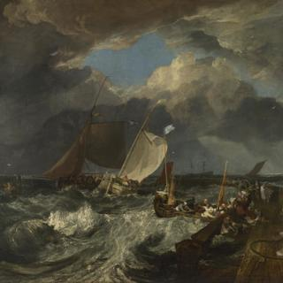
Joseph Mallord William Turner, 'Calais Pier', 1803
Joseph Mallord William Turner, 'Calais Pier', 1803
Overview
A cross-channel ferry (a packet), fully laden with passengers and flying a British flag, is approaching the port of Calais. Around it, small French fishing boats (‘poissards’) head out to sea. The water is rough and dark storm clouds gather, although a shaft of sunlight breaks through to illuminate the white sail in the centre of the picture. In the lower right foreground, a small fishing boat is trying to get away to avoid being battered against the pier. The scene looks chaotic and there is a risk of collision.
Turner’s painting is based on an actual event he experienced, when he travelled from Dover to Calais in 1802 on his first trip abroad and was ‘nearly swampt‘ in a storm at sea. Although it had a mixed response when first exhibited at the Royal Academy in 1803, the critic John Ruskin declared it to be the first painting to show signs of ‘Turner’s colossal power’.
In-depth
Calais Pier is based upon an actual event. On 15 July 1802, Turner, aged 27, began his first trip abroad, travelling from Dover to Calais in a cross-channel ferry (a packet) of the type shown here. The weather was stormy, and Turner noted in his sketchbook: ‘Our landing at Calais. Nearly swampt.’
In the painting, a ferry (centre left), fully laden with passengers and flying a British flag, is approaching the port of Calais on the northern French coast. Around it, small French fishing boats head out to the open sea. In his title, Turner refers to these fishing boats as ‘French poissards,’ which appears to be his own idiosyncratic adaptation of the French word poissarde (‘fishwife’). The sea is rough and dark storm clouds gather, although a shaft of sunlight breaks through to illuminate the white sail in the centre of the picture. The entire scene looks chaotic and there is a risk of a collision. In the lower right foreground, a small fishing boat is trying to get away to avoid being battered against the pier.
Full of incident and detail, this is one of Turner’s largest and most complex maritime paintings. Its dramatic storm scene was also a significant milestone in the development of British maritime painting. The critic John Ruskin, an early supporter of Turner, described it as ‘the richest, wildest and most difficult composition'. The painting also includes one of Turner’s most ambitious figure groups, as he shows the French fishermen attempting to cast off while agitated women look on from the windswept pier. The number and variety of animated figures combines the activity of Dutch genre painting with an almost comic element that recalls Hogarth – for instance, a departing sailor holds up a flagon to be filled by a woman holding a bottle. Dutch maritime painting was an important precedent for Turner, and he may have been stimulated to paint Calais Pier when, towards the end of his trip, he saw (and sketched) Jacob van Ruisdael’s A Storm at Sea off the Dykes of Holland (1670) in the Louvre.
When exhibited at the Royal Academy in 1803, Calais Pier met with a mixed reception that marked the beginning of the critical disapproval of Turner’s work that would continue until his death. Criticism of the picture focused especially on his method of painting the foreground and the sea. Viewers more accustomed to the smooth translucent glazes of traditional marine paintings were particularly resistant to Turner’s visible brushwork and his impasto (thickly applied paint), often laid on with a palette knife. You can see this clearly in the white foam of the waves. Although acknowledging Turner’s precocious talent, critics compared his use of paint to blots, batter, pea soup, smoke, a mix of soap and chalk, and the veins on a marble slab. The painting was unsold and remained in Turner’s possession.
- NG number
- NG472
- Date made
- 1803
- Medium
- Oil on canvas
- Dimensions
- 172 × 240 cm
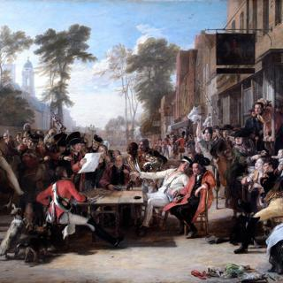
Sir David Wilkie, 'Chelsea Pensioners Reading the Waterloo Dispatch', 1822
Sir David Wilkie, 'Chelsea Pensioners Reading the Waterloo Dispatch', 1822
Overview
This acknowledged masterpiece represents Wilkie at the height of his powers. Melding seventeenth century Dutch and Flemish influences with the contemporary demand for genre scenes, the artist created an artwork that celebrated the victory of the Battle of Waterloo (1815), while redefining what constituted ‘history painting’. Chelsea Pensioners caused a sensation at the Royal Academy in 1822 and confirmed the artist’s preeminent position in the British Art world. The National Gallery was founded two years later with the acquisition of 38 paintings from the estate of John Julius Angerstein, among which were works by William Hogarth, Joshua Reynolds, and The Village Holiday by Wilkie. From the beginning, British art and Wilkie, then a contemporary living artist, was central to the Gallery’s collection.
Chelsea Pensioners neatly encapsulates how the emerging National Gallery was a direct outcome of British wartime and post-war pride and patriotism. It was during the Napoleonic War period that London overtook Paris and Amsterdam as the centre of the old master market and critical and popular opinion moved decidedly towards the idea that British art could now hold its own with the long-established European schools, including that of France.
In-depth
This acknowledged masterpiece represents Wilkie at the height of his powers. Melding seventeenth century Dutch and Flemish influences with the contemporary demand for genre scenes, the artist created an artwork that celebrated the victory of the Battle of Waterloo (1815), while redefining what constituted ‘history painting’. Chelsea Pensioners caused a sensation at the Royal Academy in 1822 and confirmed the artist’s preeminent position in the British Art world. The National Gallery was founded two years later with the acquisition of 38 paintings from the estate of John Julius Angerstein, among which were works by William Hogarth, Joshua Reynolds, and The Village Holiday by Wilkie. From the beginning, British art and Wilkie, then a contemporary living artist, was central to the Gallery’s collection.
Chelsea Pensioners neatly encapsulates how the emerging National Gallery was a direct outcome of British wartime and post-war pride and patriotism. It was during the Napoleonic War period that London overtook Paris and Amsterdam as the centre of the old master market and critical and popular opinion moved decidedly towards the idea that British art could now hold its own with the long-established European schools, including that of France.
- NG number
- L1371
- Date made
- 1822
- Medium
- Oil on panel
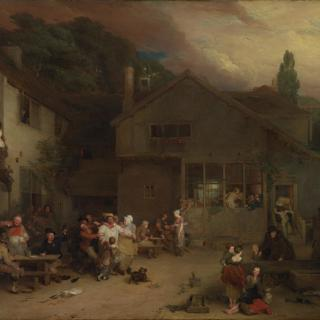
Sir David Wilkie, 'The Village Holiday', 1809-11
Sir David Wilkie, 'The Village Holiday', 1809-11
Overview
Wilkie was famous for his paintings of everyday life. Here he represents a local pub scene. Recalling the classical theme of choosing between vice and virtue, one man is torn between staying to drink with his friends or going home with his family. The man slumped in the corner on the right acts as a stark warning of the effects of drinking to excess. Between the large oil sketch made in preparation for this work, and this final version, the artist amended the composition to sit the buildings further back within the scene.
This painting was purchased from the collection of Sir John Julius Angerstein to found the National Gallery in 1824. Hogarth’s The Painter and his Pug, and his celebrated series Marriage A-la Mode also formed part of the original purchase. As a living artist, Wilkie’s inclusion meant contemporary art was included from the outset in the National Gallery Collection. Hogarth’s The Painter and his Pug and this work by Wilkie were both transferred to the Tate Gallery, Millbank, during the twentieth century.
In-depth
Wilkie was famous for his paintings of everyday life. Here he represents a local pub scene. Recalling the classical theme of choosing between vice and virtue, one man is torn between staying to drink with his friends or going home with his family. The man slumped in the corner on the right acts as a stark warning of the effects of drinking to excess. Between the large oil sketch made in preparation for this work, and this final version, the artist amended the composition to sit the buildings further back within the scene.
This painting was purchased from the collection of Sir John Julius Angerstein to found the National Gallery in 1824. Hogarth’s The Painter and his Pug, and his celebrated series Marriage A-la Mode also formed part of the original purchase. As a living artist, Wilkie’s inclusion meant contemporary art was included from the outset in the National Gallery Collection. Hogarth’s The Painter and his Pug and this work by Wilkie were both transferred to the Tate Gallery, Millbank, during the twentieth century.
- NG number
- L1357
- Date made
- 1809-11
- Medium
- Oil on canvas
- Dimensions
- 94 × 127.6 cm
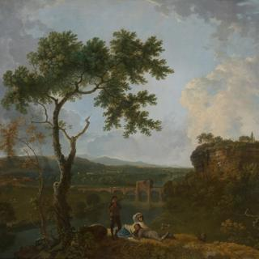
Richard Wilson, 'Holt Bridge on the River Dee', before 1762
Richard Wilson, 'Holt Bridge on the River Dee', before 1762
Overview
The view is of Holt Bridge, spanning the River Dee, at the point where the river serves as a border between Wales and England. It was painted as a pair with The Valley of the Dee with Chester in the Distance, also in the National Gallery. They are landscapes painted in the spirit of the French neoclassical landscape painter, Claude, who depicted views of the countryside outside Rome, rather than accurate depictions of real views in Cheshire. The village of Holt can be seen on the left and the tower of Farndon church on the right, but the foreground and hills have been changed to make them appear more picturesque and dramatic.
A young man plays a flute, while a reclining woman shades her eyes and gazes up towards the sun; the youth beside her looks in the same direction. The head of another man appears behind them over the brow of the hill.
In-depth
This is one of a pair of paintings depicting views of the valley of the River Dee from opposite viewpoints near the village of Holt in Cheshire. The other is The Valley of the Dee with Chester in the Distance. They are landscapes painted in the spirit of the French neoclassical landscape painter, Claude, who depicted views of the countryside outside Rome, rather than accurate depictions of real views in Cheshire. The foreground is invented, and the general character of the scene has been changed.
The view is of Holt Bridge, spanning the River Dee, at the point where the river serves as a border between Wales and England. The fourteenth-century Holt Bridge still survives, although its gatehouse, part ruined in Wilson’s day, has since crumbled. The small village of Holt is on the left of the picture, in the Welsh country of Denbighshire; the larger village of Farndon, in the English county of Cheshire, is on the right. Wilson has set the square tower of Farndon’s church on top of cliffs, but these are in fact sandstone rocks, and Wilson has exaggerated their height. By doing this, he has given the church a dramatic position like the ruined tower on a cliff in his The Destruction of the Children of Niobe (Yale Center for British Art, New Haven, USA). He had exhibited this scene from Ovid’s Metamorphoses two years earlier, in 1760, and it was arguably the key picture of his career.
Three figures are grouped in the foreground in the shade of a graceful tree. A young man plays a flute, while a reclining woman shades her eyes and gazes up towards the sun; the youth beside her looks in the same direction. Whatever they are looking at is outside the picture space, so it is impossible for us to know what has caught their attention. The head of another man appears behind them over the brow of the hill. He carries a long pole or perhaps a sword over his shoulder. It is not clear who he is in relation to the other figures. Maybe he is the herdsman for the flock of sheep below.
Wilson made a preliminary chalk drawing of the scene now in Birmingham City Art Gallery, which is closely followed in the painting. However the figures in the drawing are a woman and a child, who appears to be gathering firewood. Wilson decided to replace them in the oil painting with the more poetic and mysterious group who are making music – often in art a euphemism for lovemaking – and are dazzled by the sun.
The painting was probably exhibited at the Society of Artists in 1762.
- NG number
- NG6196
- Date made
- Before 1762
- Medium
- Oil on canvas
- Dimensions
- 148.5 × 193 cm

Richard Wilson, 'The Valley of the Dee, with Chester in the Distance', about 1761
Richard Wilson, 'The Valley of the Dee, with Chester in the Distance', about 1761
Overview
Like its pair Holt Bridge on the River Dee, which is also in the National Gallery, this is a view of the valley where England and Wales meet. It is probably the ‘View near Chester’ that Wilson exhibited at the Society of Artists in 1761. It was most likely painted downstream from the village of Holt in Denbighshire in North Wales, from a viewpoint five miles to the east of Gresford. The towers of Chester Cathedral and St John’s Church are just visible in the background. The hills in the distance may be in Lancashire, beyond the River Mersey. Wales is on the left of the river and England is on the right.
The style of the landscape is inspired by the work of the seventeenth-century French neoclassical painter, Claude, who depicted views of the countryside outside Rome. His paintings were very fashionable in Britain when Wilson painted this landscape.
In-depth
Like Holt Bridge on the River Dee, the other painting from this pair, this is a view of the valley where England and Wales meet. For a long time the viewpoint of this picture was unknown, but it is probably the ‘View near Chester’ that Wilson exhibited at the Society of Artists in 1761. It was most likely painted downstream from the village of Holt in Denbighshire in North Wales, from a viewpoint five miles to the east of Gresford. The towers of Chester Cathedral and St John’s Church are just visible in the background. The hills in the distance may be in Lancashire, beyond the River Mersey. Wales is on the left of the river and England is on the right.
The style of the landscape is inspired by the work of the seventeenth-century French neoclassical painter, Claude, who depicted views of the countryside outside Rome. His paintings were very fashionable in Britain when this landscape was painted. In Wilson’s picture it is sunset, and a golden light illuminates the clouds and meadows, infusing the composition with an atmosphere of warmth and stillness. This quality of evening light was also favoured by Claude in paintings such as A Seaport.
Wilson’s trees cast long shadows over the grass and the sun is in the west, suggesting that it is the end of the day. He has made the native English oak trees in the foreground tall and slender with thin, spreading canopies like the trees of the Roman countryside that Claude paints in pictures such as Landscape with David at the Cave of Adullam.
A group of figures and a dog occupy the brow of the hill in the foreground of Wilson’s painting. A woman stands holding a baby, with a dog beside her, while two men sit on the ground. One appears to hold a stick and may be the herdsman of the cattle grazing nearby. It is as though the shepherds and nymphs commonly included in Claude’s neoclassical landscapes, such as Landscape with Goatherd and Goats, have been translated here into contemporary but timeless English country folk. The inclusion of the figures helps us to locate our own viewpoint on the scene.
- NG number
- NG6197
- Date made
- About 1761
- Medium
- Oil on canvas
- Dimensions
- 148 × 193.5 cm
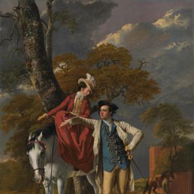
Joseph Wright 'of Derby', 'Mr and Mrs Thomas Coltman', about 1770-2
Joseph Wright 'of Derby', 'Mr and Mrs Thomas Coltman', about 1770-2
Overview
Born in 1747, Thomas Coltman inherited Hagnaby Priory, near East Kirkby in Lincolnshire, in 1768. He and his wife Mary Barlow are portrayed here probably a year or so after their marriage in October 1769. The couple can also be seen in Wright’s great painting An Experiment on a Bird in the Air Pump (also in the National Gallery), exhibited in 1768.
The informality of the portrait suggests that Wright and the Coltmans were on friendly terms. Coltman rented a house in Derby from Wright and owned two other paintings by him. Both Mr and Mrs Coltman look relaxed and natural, about to set out on a morning ride. The landscape background is studied from nature – Wright painted his first pure landscape at about the same time.
A groom leads Coltman’s bay horse from stables behind the house. This is Gate Burton Hall, which Coltman rented after his marriage while continuing to rent the house in Derby from Wright.
In-depth
Thomas Coltman and his wife Mary are portrayed here probably a year or so after their marriage in October 1789. Coltman was a friend of Wright’s, although 13 years younger than him. Born in 1747, he was the second son of John Coltman of Hagnaby Priory, near East Kirkby in Lincolnshire. He inherited the Hagnaby estate in 1768 when his elder brother died unexpectedly, and married Mary Barlow in 1769.
It is not known how the couple met but they can be seen in Wright’s great painting An Experiment on a Bird in the Air Pump, exhibited in 1768. Wright often used relatives or friends as models for his subject pictures. Coltman rented a house in Derby from Wright and owned two other paintings by him: A Girl Reading a Letter, with an old Man reading over her Shoulder and Two Boys Fighting over a Bladder, both in a private collection.
The informality of the portrait conveys the friendship between Wright and his sitters. Both Mr and Mrs Coltman look relaxed and natural, about to set out on a morning ride. Mrs Coltman sits side-saddle and wears a rose-red riding habit. Coltman stands beside the grey horse in an energetic pose, wearing a summer frock coat and a waistcoat trimmed with silver twisted thread, which shows Wright’s delight in the play of light on intricate surfaces. None of the raised areas of paint, known as impasto, has been flattened as the painting is unlined, so we can still admire Wright’s superb painterly technique. Coltman’s breeches are so close-fitting that they reveal the outline of a coin in his pocket – perhaps a joke between the friends.
A groom leads Coltman’s bay horse from stables behind the house. This is Gate Burton Hall, which Coltman rented after his marriage while continuing to rent a house in Derby from Wright. In the painting, Coltman may be pointing to Lincoln Cathedral which could be seen from the Hall. The landscape background is studied from nature and lit by daylight, which marks a new departure in Wright’s work – he painted his first pure landscape at about the same time. Here the light shifts over the landscape through the windswept clouds in a credible representation of the English weather. The sky was originally bluer, but the smalt pigment has lost its colour and degraded to grey. Wright adapted the Coltmans‘ poses eight years later for his double portrait of the Duke and Duchess of Hamilton (which was destroyed by fire).
Wright made minor alterations to the position of the house at the right edge, in Thomas Coltman’s left arm and in the horse’s ears. However, cracks in the top layer of paint suggest that foliage once covered much of the sky on the right, and that a broad tree trunk was originally placed to the left of the horse’s legs.
The artist entered the portrait in his account book as Mr and Mrs Thomas Coltman a conversation. It may have been the picture he exhibited at the Society of Artists in 1771 as ’A small conversation'.
- NG number
- NG6496
- Date made
- About 1770-2
- Medium
- Oil on canvas
- Dimensions
- 127 × 101.6 cm

Johann Zoffany, 'Mrs Oswald', about 1763-4
Johann Zoffany, 'Mrs Oswald', about 1763-4
Overview
Zoffany has portrayed Mary Oswald at the age of about 50. Probably born in Kingston, Jamaica, she was the only child of Alexander Ramsay, a Glasgow-born merchant who settled in Jamaica, acquiring plantations there and in the South American colonies. In 1750, she married Richard Oswald, a Scottish entrepreneur, merchant, shipowner and slave trader who provided army supplies.
This portrait is one of Zoffany’s largest paintings and was probably commissioned to hang in the Oswald’s stately home of Auchincruive, three miles from Ayr in Scotland. Mrs Oswald’s costume and hairstyle suggest a date in the early 1760s. It was unusual for Zoffany to portray a female sitter on her own. He appears to have detected little zest for life in Mrs Oswald, and her pose in the wild natural setting seems only to emphasise her solitude.
In-depth
Zoffany has portrayed Mary Oswald (about 1713–1788) at the age of about 50. Probably born in Kingston, Jamaica, she was the only child of Alexander Ramsay, a Glasgow-born merchant who settled in Jamaica, acquiring plantations there and in the South American colonies. Mary not only succeeded to her father’s estates, but also to those of her two uncles. She was very wealthy and much of that wealth was gained through slavery.
In November 1750, Mary Ramsay married Richard Oswald, a Scottish entrepreneur, merchant, shipowner and slave trader. Oswald also negotiated the peace treaty with Benjamin Franklin that concluded the War of American Independence, during which Oswald had operated as an army supplies contractor.
This portrait is one of Zoffany’s largest paintings and was probably commissioned to hang in the Oswald’s Scottish house designed by the architect Robert Adam, on their estate of Auchincruive, three miles from Ayr. Oswald collected paintings and decorated his Scottish home with them. After his death, Mrs Oswald requested that the pictures displayed at Auchincruive should stay there, and this portrait by Zoffany remained in the house until 1922.
Mrs Oswald was almost certainly painted in Zoffany’s Covent Garden studio. Perhaps she was surprised on seeing the finished picture to find she was sitting on a boulder with a large slanting tree trunk beside her. She does not seem at ease in this wild setting. She wears a ribboned cap and lustrous blue taffeta dress with ruches, bows and wide lace sleeve ruffles and a lace ‘modesty piece’ above her neckline to protect her fashionably pale skin from the sun. She carries a flat straw hat over her arm, the same one that appears in Zoffany’s portrait of David Garrick and his Wife by his Temple to Shakespeare at Hampton (Yale Centre for British Art, New Haven). The hat clearly did not belong to Mrs Oswald but came from Zoffany’s props box.
Zoffany appears to have detected little zest for life in Mrs Oswald and her pose and setting seem only to emphasise her solitude. There is a tradition that a portrait of Mr Oswald, who died in 1784, at about the time this portrait was painted, ‘exists behind a cloud’ in the picture. X-ray photographs show what was possibly a large male head sculpted as part of an urn in the top right area, later painted over with foliage. The male head is too large to have formed part of this composition and may be the remains of an earlier abandoned work.
The Scottish national poet, Robert Burns, who was Ayrshire born and bred, wrote that although he had not known Mrs Oswald personally, ‘I spent my early years in her neighbourhood, and among her servants and tenants I know that she was detested with the most heart-felt cordiality.’ In a very nasty ode to her memory, which was published in the Morning Star on 7 May 1789, he wrote: ‘View the weathered beldam’s face / Can thy keen inspection trace / Aught of humanity’s sweet melting grace?’ We must wonder whether Burns ever saw Zoffany’s portrait of Mrs Oswald.
- NG number
- NG4931
- Date made
- About 1763-4
- Medium
- Oil on canvas
- Dimensions
- 226.5 × 158.8 cm

Johann Zoffany, 'The Sharp Family', 1779-81
Johann Zoffany, 'The Sharp Family', 1779-81
Overview
Granville Sharp (1735–1813), shown seated at the centre of this lively group, was one of the first British campaigners for the abolition of the slave trade. He was also a renowned scholar and a talented musician. Here Zoffany commemorates the concerts that Sharp and family members staged on their barge, 'Apollo' (which was moored on the Thames at Fulham) from 1775 to 1783.
In-depth
(No in-depth found)
- NG number
- L1287
- Date made
- 1779-81
- Medium
- Oil on canvas
- Dimensions
- 115.6 × 125.7 cm